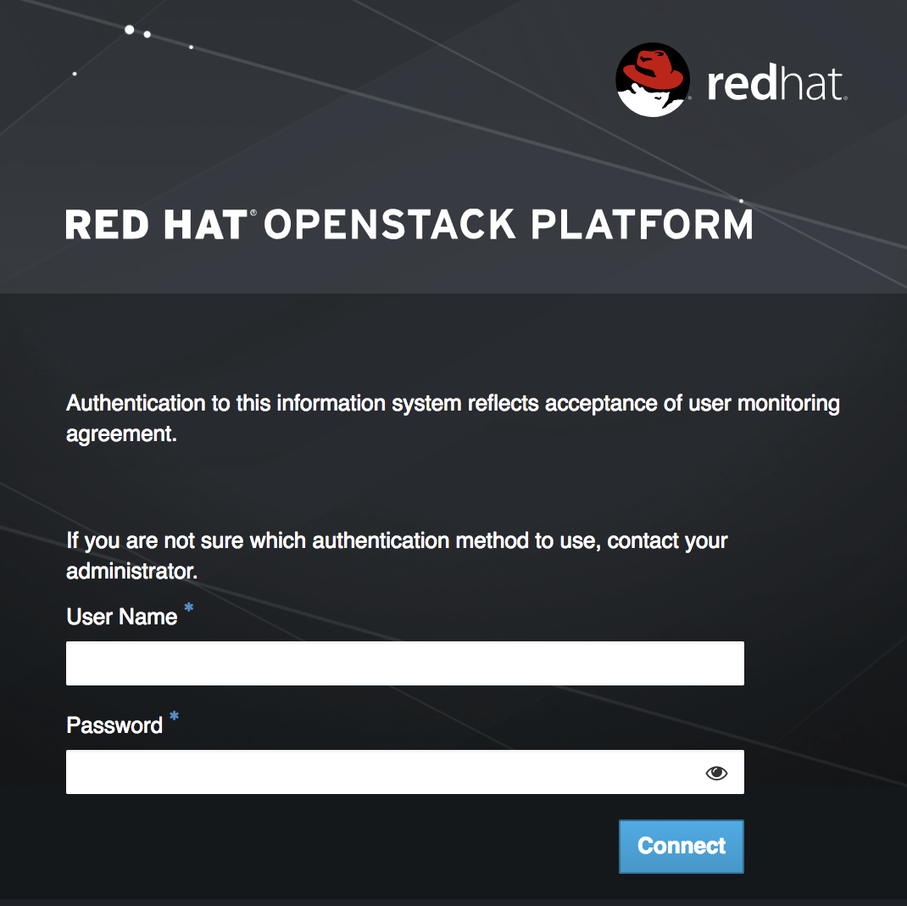
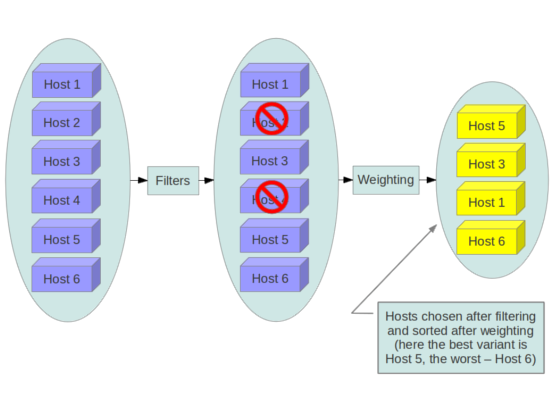

Security and Hardening Guide
Good Practices, Compliance, and Security Hardening
Abstract
Chapter 1. Introduction
Security is an important concern and should be a strong focus of any deployment. Data breaches and downtime are costly and difficult to manage, laws might require passing audits and compliance processes, and projects can expect a certain level of privacy and security for their data. This section provides a general introduction to security in Red Hat OpenStack Platform, as well as the role of Red Hat in supporting your system’s security.
This document provides advice and good practice information for hardening the security of your Red Hat OpenStack Platform deployment, with a focus on director-based deployments. While following the instructions in this guide will help harden the security of your environment, we do not guarantee security or compliance from following these recommendations.
1.1. Basic OpenStack Concepts
1.1.1. What is OpenStack?
To understand what OpenStack is, it is necessary to first understand what a cloud is. The simple version is that cloud computing is about making processing power, disk storage, database processing, and networking services available for consumption, allowing customers to interact with them programmatically through a set of APIs.
Compare this approach with a traditional hypervisor product that is focused on hosting virtual machines (VM): the VMs are used in the same way as traditional physical standalone servers, where one sysadmin will provision the virtual machine, and maybe a different sysadmin logs in and installs the database application, or other software. The VM then runs for a few years, stores the data locally on (or an attached SAN), and is backed up every day.
It is correct that OpenStack also operates virtual machines, but the management approach differs greatly from that described above. Instances should be ready to use once they are created, with the application ready, and no further configuration needed. If an issue is encountered, you should deploy a new replacement instance, rather than spending time troubleshooting the failures.
OpenStack has a whole selection of services that work together to accomplish what’s been described above, but that is only one of the many use cases.
For more information, see the OpenStack Product Guide: https://access.redhat.com/documentation/en-us/red_hat_openstack_platform/16.1/html-single/product_guide/
1.1.2. Key terms
Before proceeding to the rest of this guide, it is recommended you become familiar with some of the OpenStack-specific terminology that a new user would encounter early on.
-
instance: This is a virtual machine. These are hosted on a dedicated hypervisor server, called a Compute node. -
project: A partitioned collection of OpenStack resources, combining users, instances, and virtual networks (among others). Projects allow you to keep one collection of users and instances separate from another collection. This is useful for OpenStack deployments that host multiple different departments or organizations. An administrator must specify a destination project for each user or instance they create. -
image: An operating system template. When you create an instance, you will need to decide which operating system it will run. OpenStack allows you to choose an operating system template, called an image. Pre-built images are available for CentOS and Red Hat Enterprise Linux. -
flavor: A virtual machine hardware template. Rather than having to specify how much RAM and CPU to allocate each time you build an instance, you can define a flavor to pre-configure these values. Your Red Hat OpenStack Platform deployment will already have flavors defined, fromm1.tinywith 1GB RAM, through to them1.xlargewith 16GB. -
security group: These are firewall rules. Each project can have its own security group, defining the traffic that is allowed to enter or leave the network.
1.1.3. Configuration Management with the Director
The Red Hat OpenStack Platform director lets you deploy and manage an OpenStack environment using YAML templates. This allows you to easily get a view of how your settings have been configured. The OpenStack configuration files are managed by Puppet, so any unmanaged changes are overwritten whenever you run the openstack overcloud deploy process. This allows you to have some assurance that your YAML configuration represents reality at a particular point in time. This approach also allows you to have a consistent, auditable, and repeatable approach to security configuration management in your OpenStack deployment. For disaster recovery, director’s use of configuration management and orchestration also improves the recovery time, as the cloud deployment and configuration is codified.
In addition, you can add your own customizations using a custom environment file that gets passed through at deployment time.
For more information, see the Director guide: https://access.redhat.com/documentation/en-us/red_hat_openstack_platform/16.1/html-single/director_installation_and_usage/
1.2. Security Boundaries and Threats
To understand the security risks that present themselves to your cloud deployment, it can be helpful to abstractly think about it as a collection of components that have a common function, users, and shared security concerns, which this guide refers to as security zones. Threat actors and vectors are classified based on their motivation and access to resources. The intention is to provide you a sense of the security concerns for each zone, depending on your objectives.
1.2.1. Security Zones
A security zone comprises users, applications, servers or networks that share common trust requirements and expectations within a system. Typically they share the same authentication and authorization requirements and users. Although you might refine these zone definitions further, this guide refers to the following distinct security zones which form the bare minimum that is required to deploy a security-hardened OpenStack cloud. These security zones are listed below from least to most trusted:
- Public zone - External public-facing APIs, neutron external networks (Floating IP and SNAT for instance external connectivity).
- Guest zone - Project networks (VLAN or VXLAN).
- Storage access zone - Storage Management (storage monitoring and clustering), Storage (SAN/object/block storage).
- Management zone - Typically includes the undercloud, host operating system, hardware, and networking, Undercloud control plane (provisioning/management of overcloud hosts), overcloud sysadmin/monitoring/backup
- Admin zone - Allows endpoint access through the overcloud, Internal APIs, including infrastructure APIs, DB, RPC (will vary depending on the different API access roles for projects on the overcloud). Admin access to the overcloud should not require management access to the undercloud and hardware.
These security zones can be mapped separately, or combined to represent the majority of the possible areas of trust within a given OpenStack deployment. For example, some deployment topologies might consist of a combination of zones on one physical network while other topologies have these zones separated. In each case, you should be aware of the appropriate security concerns. Security zones should be mapped out against your specific OpenStack deployment topology. The zones and their trust requirements will vary depending upon whether the cloud instance is public, private, or hybrid.
1.2.1.1. Public zone
The public security zone is an entirely untrusted area of the cloud infrastructure. It can refer to the Internet as a whole or simply to networks that are external to your Red Hat OpenStack Platform deployment which you have no authority. Any data with confidentiality or integrity requirements that traverses this zone should be protected using compensating controls.
Always consider this zone to be untrusted.
1.2.1.2. Guest zone
Typically used for Compute instance-to-instance traffic, the guest security zone handles compute data generated by instances on the cloud, but not services that support the operation of the cloud, such as API calls.
Public and private cloud providers that do not have stringent controls on instance use or allow unrestricted internet access to instances should consider this zone to be untrusted. Private cloud providers might want to consider this network as internal and trusted only if the proper controls are implemented to assert that the instances and all associated projects (including the underlying hardware and internal networks) can be trusted.
1.2.1.3. Storage access zone
Most of the data transmitted across this network requires high levels of integrity and confidentiality. In some cases, depending on the type of deployment there might also be strong availability requirements.
The storage access network should not be accessible outside of the deployment unless absolutely required. With the exception replication requirements, this network is assumed to not be accessible from outside the cloud, other than by storage appliances, and components deployed into this zone should be treated as sensitive from a security perspective.
The trust level of this network is heavily dependent on deployment decisions, therefore this guide does not assign a default level of trust to this zone.
1.2.1.4. Control Plane
The control plane is where services interact. The networks in this zone transport confidential data such as configuration parameters, usernames, and passwords. Command and Control traffic typically resides in this zone, which necessitates strong integrity requirements. Access to this zone should be highly restricted and monitored. At the same time, this zone should still employ all of the security good practices described in this guide.
In most deployments this zone is considered trusted. However, when considering an OpenStack deployment, there are many systems that bridge this zone with others, potentially reducing the level of trust you can place on this zone.
1.2.1.5. Management network
The management network is used for system administration, monitoring, and/or backup, but is a place where no OpenStack APIs or control interfaces are hosted. This location is where you would place the PXE network used for an on-premises and/or private Red Hat OpenStack Platform deployment, including any hardware management interfaces, network equipment and underlying operating system access for the director and compute/storage/management nodes.
1.3. Connecting security zones
Any component that spans across multiple security zones with different trust levels or authentication requirements must be carefully configured. These connections are often the weak points in network architecture, and should always be configured to meet the security requirements of the highest trust level of any of the zones being connected. In many cases the security controls the connected zones should be a primary concern due to the likelihood of attack. The points where zones meet do present an additional attack service, and adds opportunities for attackers to migrate their attack to more sensitive parts of the deployment.
In some cases, OpenStack operators might want to consider securing the integration point at a higher standard than any of the zones in which it resides. Given the above example of an API endpoint, an adversary could potentially target the Public API endpoint from the public zone, leveraging this foothold in the hopes of compromising or gaining access to the internal or admin API within the management zone if these zones were not completely isolated.
The design of OpenStack is such that separation of security zones is difficult. Because core services will usually span at least two zones, special consideration must be given when applying security controls to them.
1.4. Threat classification, actors, and attack vectors
Most types of cloud deployment, public, private, or hybrid, are exposed to some form of attack. This section categorizes attackers and summarizes potential types of attacks in each security zone.
1.4.1. Threat actors
A threat actor is an abstract way to refer to a class of adversary that you might attempt to defend against. The more capable the actor, the more rigorous the security controls that are required for successful attack mitigation and prevention. Security is a matter of balancing convenience, defense, and cost, based on requirements. In some cases it will not be possible to secure a cloud deployment against all of the threat actors described here. When deploying an OpenStack cloud, you must decide where the balance lies for your deployment and usage.
As part of your risk assessment, you must also consider the type of data you store and any accessible resources, as this will also influence certain actors. However, even if your data is not appealing to threat actors, they could simply be attracted to your computing resources, for example, to participate in a botnet, or to run unauthorized cryptocurrency mining.
- Nation-State Actors - This is the most capable adversary. Nation-state actors can bring tremendous resources against a target. They have capabilities beyond that of any other actor. It is very difficult to defend against these actors without incredibly stringent controls in place, both human and technical.
- Serious Organized Crime - This class describes highly capable and financially driven groups of attackers. They are able to fund in-house exploit development and target research. In recent years the rise of organizations such as the Russian Business Network, a massive cyber-criminal enterprise, has demonstrated how cyber attacks have become a commodity. Industrial espionage falls within the serious organized crime group.
- Highly Capable Groups - This refers to ‘Hacktivist’ type organizations who are not typically commercially funded but can pose a serious threat to service providers and cloud operators.
- Motivated Individuals Acting alone - these attackers come in many guises, such as rogue or malicious employees, disaffected customers, or small-scale industrial espionage.
- Script Kiddies - These attackers don’t target a specific organization, but run automated vulnerability scanning and exploitation. They are often only a nuisance, however compromise by one of these actors is a major risk to an organization’s reputation.
The following practices can help mitigate some of the risks identified above:
- Security updates - You must consider the end-to-end security posture of your underlying physical infrastructure, including networking, storage, and server hardware. These systems will require their own security hardening practices. For your Red Hat OpenStack Platform deployment, you should have a plan to regularly test and deploy security updates.
- Access management - When granting system access to individuals, you should apply the principle of least privilege, and only grant them the granular system privileges they actually need. You can help enforce this policy using the practice of AAA (access, authorization, and accounting). This approach can also help mitigate the risks of both malicious actors and typographical errors from system administrators.
- Manage insiders - You can help mitigate the threat of malicious insiders by applying careful assignment of role-based access control (minimum required access), using encryption on internal interfaces, and using authentication/authorization security (such as centralized identity management). You can also consider additional non-technical options, such as separation of duties and irregular job role rotation.
1.4.1.1. Outbound Attacks and Reputational Risk
Careful consideration should be given to potential outbound abuse from a cloud deployment. Cloud deployments tend to have lots of resources available; an attacker who has established a point of presence within the cloud, either through hacking or entitled access, such as rogue employee, can use these resources for malicious purposes. Clouds with Compute services make for ideal DDoS and brute force engines. The issue is especially pressing for public clouds as their users are largely unaccountable, and can quickly spin up numerous disposable instances for outbound attacks. Methods of prevention include egress security groups, traffic inspection, intrusion detection systems, customer education and awareness, and fraud and abuse mitigation strategies. For deployments accessible by or with access to public networks, such as the Internet, processes and infrastructure should be in place to ideally detect, and also address outbound abuse.
1.5. Supporting software
Underpinning the whole of the Red Hat solution stack is the secure software supply chain. A cornerstone of Red Hat’s security strategy, the goal of this strategically important set of practices and procedures is to deliver solutions that have security built-in upfront and supported over time. Specific steps which Red Hat take include:
- Maintaining upstream relationships and community involvement to help focus on security from the start.
- Selecting and configuring packages based on their security and performance track records.
- Building binaries from associated source code (instead of simply accepting upstream builds).
- Applying a suite of inspection and quality assurance tools to prevent an extensive array of potential security issues and regressions.
- Digitally signing all released packages and distributing them through cryptographically authenticated distribution channels.
- Providing a single, unified mechanism for distributing patches and updates. The Red Hat Enterprise Linux and KVM components which underlie OpenStack are also Common Criteria certified. This involves a third party auditor performing physical site visits, and interviewing staff about adhering to good practices, for example, about the supply chain or development.
In addition, Red Hat maintains a dedicated security team that analyzes threats and vulnerabilities against our products, and provides relevant advice and updates through the Customer Portal. This team determines which issues are important, as opposed to those that are mostly theoretical problems. The Red Hat Product Security team maintains expertise in, and makes extensive contributions to the upstream communities associated with our subscription products. A key part of the process, Red Hat Security Advisories, deliver proactive notification of security flaws affecting Red Hat solutions – along with patches that are frequently distributed on the same day the vulnerability is first published.
1.6. System Documentation
1.6.1. System Roles and Types
The two broadly defined types of nodes that generally make up an OpenStack installation are:
- Infrastructure nodes - These run the cloud-related services, such as the OpenStack API providers (such as neutron), the message queuing service, storage management, monitoring, networking, and other services required to support the operation and provisioning of the cloud.
- Compute, storage, or other resource nodes - Provide compute and storage capacity for instances running on your cloud.
1.6.2. System Inventory
Documentation should provide a general description of the OpenStack environment and cover all systems used (for example, production, development, or test). Documenting system components, networks, services, and software often provides the perspective needed to thoroughly cover and consider security concerns, attack vectors, and possible security zone bridging points. A system inventory might need to capture ephemeral resources such as virtual machines or virtual disk volumes that would otherwise be persistent resources in a traditional IT environment.
1.6.3. Hardware Inventory
Clouds without stringent compliance requirements for written documentation might benefit from having a Configuration Management Database (CMDB). CMDBs are normally used for hardware asset tracking and overall life-cycle management. By leveraging a CMDB, an organization can quickly identify cloud infrastructure hardware such as compute nodes, storage nodes, or network devices. A CMDB can assist in identifying assets that exist on the network which might have vulnerabilities due to inadequate maintenance, inadequate protection, or being displaced and forgotten. An OpenStack provisioning system can provide some basic CMDB functions if the underlying hardware supports the necessary auto-discovery features.
1.6.4. Software Inventory
As with hardware, all software components within the OpenStack deployment should be documented. Examples include:
- System databases, such as MySQL or mongoDB
- OpenStack software components, such as Identity or Compute
- Supporting components, such as load-balancers, reverse proxies, DNS, or DHCP services An authoritative list of software components might be critical when assessing the impact of a compromise or vulnerability in a library, application or class of software.
1.6.5. Network Topology
A network topology should be provided with highlights specifically calling out the data flows and bridging points between the security zones. Network ingress and egress points should be identified along with any OpenStack logical system boundaries. Multiple diagrams might be needed to provide complete visual coverage of the system. A network topology document should include virtual networks created on behalf of projects by the system along with virtual machine instances and gateways created by OpenStack, as well as physical and overlay networks used to provide communication between nodes and external networks.
1.6.6. Services, Protocols, and Ports
Knowing information about organizational assets is typically a good practice. An assets table can assist with validating security requirements and help to maintain standard security components such as firewall configuration, service port conflicts, security remediation areas, and compliance. Additionally, the table can help identify the relationship between OpenStack components. The table might include:
- Services, protocols, and ports being used in the OpenStack deployment.
- An overview of all services running within the cloud infrastructure.
It is recommended that OpenStack deployments maintain a record of this information. For a list of ports required for a director deployment, see https://access.redhat.com/documentation/en-us/red_hat_openstack_platform/16.1/html-single/firewall_rules_for_red_hat_openstack_platform/.
The port configuration is also contained in the heat templates of each service. You can extract this information with the following command:
find -L /usr/share/openstack-tripleo-heat-templates/ -type f | while read f;do if `grep -q firewall_rules $f`;then echo -e "\n $f " ; grep firewall_rules "$f" -A10;fi; done
Chapter 2. Encryption and Key Management
Inter-device communication is a serious security concern. Secure methods of communication over a network are becoming increasingly important, as demonstrated by significant vulnerabilities such as Heartbleed, or more advanced attacks such as BEAST and CRIME. However, encryption is only one part of a larger security strategy. The compromise of an endpoint means that an attacker no longer needs to break the encryption used, but is able to view and manipulate messages as they are processed by the system.
This chapter will review features around configuring Transport Layer Security (TLS) to secure both internal and external resources, and will call out specific categories of systems that should be given specific attention.
OpenStack components communicate with each other using various protocols and the communication might involve sensitive or confidential data. An attacker might try to eavesdrop on the channel in order to get access to sensitive information. It is therefore important that all the components must communicate with each other using a secured communication protocol.
2.1. Introduction to TLS and SSL
There are situations where there is a security requirement to assure the confidentiality or integrity of network traffic in an OpenStack deployment. You would generally configure this using cryptographic measures, such as the TLS protocol. In a typical deployment, all traffic transmitted over public networks should be security hardened, but security good practice expects that internal traffic must also be secured. It is insufficient to rely on security zone separation for protection. If an attacker gains access to the hypervisor or host resources, compromises an API endpoint, or any other service, they must not be able to easily inject or capture messages, commands, or otherwise affect the management capabilities of the cloud.
You should security harden all zones with TLS, including the management zone services and intra-service communications. TLS provides the mechanisms to ensure authentication, non-repudiation, confidentiality, and integrity of user communications to the OpenStack services, and between the OpenStack services themselves.
Due to the published vulnerabilities in the Secure Sockets Layer (SSL) protocols, consider using TLS 1.2 or higher in preference to SSL, and that SSL is disabled in all cases, unless you require compatibility with obsolete browsers or libraries.
2.1.1. Public Key Infrastructure
Public Key Infrastructure (PKI) is a framework on which to provide encryption algorithms, cipher modes, and protocols for securing data and authentication. It consists of a set of systems and processes to ensure traffic can be sent encrypted while validating the identity of the parties. The PKI profile described here is the Internet Engineering Task Force (IETF) Public Key Infrastructure (PKIX) profile developed by the PKIX working group. The core components of PKI are:
- Digital Certificates - Signed public key certificates are data structures that have verifiable data of an entity, its public key along with some other attributes. These certificates are issued by a Certificate Authority (CA). As the certificates are signed by a CA that is trusted, once verified, the public key associated with the entity is guaranteed to be associated with the said entity. The most common standard used to define these certificates is the X.509 standard. The X.509 v3 which is the current standard is described in detail in RFC5280, and updated by RFC6818. Certificates are issued by CAs as a mechanism to prove the identity of online entities. The CA digitally signs the certificate by creating a message digest from the certificate and encrypting the digest with its private key.
- End entity - The user, process, or system that is the subject of a certificate. The end entity sends its certificate request to a Registration Authority (RA) for approval. If approved, the RA forwards the request to a Certification Authority (CA). The Certification Authority verifies the request and if the information is correct, a certificate is generated and signed. This signed certificate is then send to a Certificate Repository.
- Relying party - The endpoint that receives the digitally signed certificate that is verifiable with reference to the public key listed on the certificate. The relying party should be in a position to verify the certificate up the chain, ensure that it is not present in the CRL and also must be able to verify the expiry date on the certificate.
- Certification Authority (CA) - CA is a trusted entity, both by the end party and the party that relies upon the certificate for certification policies, management handling, and certificate issuance.
- Registration Authority (RA) - An optional system to which a CA delegates certain management functions, this includes functions such as, authentication of end entities before they are issued a certificate by a CA.
- Certificate Revocation Lists (CRL) - A Certificate Revocation List (CRL) is a list of certificate serial numbers that have been revoked. End entities presenting these certificates should not be trusted in a PKI model. Revocation can happen because of several reasons for example, key compromise, CA compromise.
- CRL issuer - An optional system to which a CA delegates the publication of certificate revocation lists.
- Certificate Repository - The location where the end entity certificates and certificate revocation lists are stored and queried - sometimes referred to as the certificate bundle.
It is strongly recommend you security harden all services using Public Key Infrastructure (PKI), including using TLS for API endpoints. It is impossible for the encryption or signing of transports or messages alone to solve all these problems. In addition, hosts themselves must be hardened and implement policies, namespaces, and other controls to protect their private credentials and keys. However, the challenges of key management and protection do not reduce the necessity of these controls, or lessen their importance.
2.1.2. Certification Authorities
Many organizations have an established Public Key Infrastructure with their own Certification Authority (CA), certificate policies, and management for which they should use to issue certificates for internal OpenStack users or services. Organizations in which the public security zone is Internet facing will additionally need certificates signed by a widely recognized public CA. For cryptographic communications over the management network, it is recommended one not use a public CA. Instead, the recommendation is that most deployments deploy their own internal CA.
Effective use of TLS relies on the deployment being given a domain or subdomain in DNS which can be used by either a wildcard, or series of specific certificates issues by either a public or internal CA. To ensure TLS certificates can be effectively validated, access to platform services would need to be through these DNS records.
It is recommended that the OpenStack cloud architect consider using separate PKI deployments for internal systems and customer facing services. This allows the cloud deployer to maintain control of their PKI infrastructure and makes requesting, signing and deploying certificates for internal systems easier. Advanced configurations might use separate PKI deployments for different security zones. This allows OpenStack operators to maintain cryptographic separation of environments, ensuring that certificates issued to one are not recognized by another.
Certificates used to support TLS on internet facing cloud endpoints (or customer interfaces where the customer is not expected to have installed anything other than standard operating system provided certificate bundles) should be provisioned using Certificate Authorities that are installed in the operating system certificate bundle.
There are management, policy, and technical challenges around creating and signing certificates. This is an area where cloud architects or operators might wish to seek the advice of industry leaders and vendors in addition to the guidance recommended here.
2.1.3. Configuring Encryption using Director
By default, the overcloud uses unencrypted endpoints for its services. This means that the overcloud configuration requires an additional environment file to enable SSL/TLS for its Public API endpoints. The Advanced Overcloud Customization guide describes how to configure your SSL/TLS certificate and include it as a part of your overcloud creation process: https://access.redhat.com/documentation/en-us/red_hat_openstack_platform/16.1/html/advanced_overcloud_customization/sect-enabling_ssltls_on_the_overcloud
2.1.4. TLS libraries
Certain components, services, and applications within the OpenStack ecosystem can be configured to use TLS libraries. The TLS and HTTP services within OpenStack are typically implemented using OpenSSL, which has a module that has been validated for FIPS 140-2. However, consider that each application or service can still introduce weaknesses in how they use the OpenSSL libraries.
2.1.5. Deprecation of TLS 1.0
FedRAMP-authorized systems are required to move away from TLS 1.0. The recommended level is 1.2, and 1.1 is acceptable only if broad compatibility is required. For more information, see https://www.fedramp.gov/assets/resources/documents/CSP_TLS_Requirements.pdf.
For Red Hat OpenStack Platform 13 deployments, TLS 1.0 connections are not accepted by HAProxy, which handles TLS connections for TLS enabled APIs. This is implemented by the no-tlsv10 option. For HA deployments with InternalTLS enabled, cross-node traffic on the controller plane is also encrypted. This includes RabbitMQ, MariaDB, and Redis, among others. MariaDB and Redis have deprecated TLS1.0, and the same deprecation for RabbitMQ is expected to be backported from upstream.
2.1.5.1. Checking whether TLS 1.0 is in use
You can use cipherscan to determine whether TLS 1.0 is being presented by your deployment. Cipherscan can be cloned from https://github.com/mozilla/cipherscan. This example output demonstrates results received from horizon:
Run cipherscan from a non-production system, as it might install additional dependencies when you first run it.
$ ./cipherscan https://openstack.lab.local .............................. Target: openstack.lab.local:443 prio ciphersuite protocols pfs curves 1 ECDHE-RSA-AES128-GCM-SHA256 TLSv1.2 ECDH,P-256,256bits prime256v1 2 ECDHE-RSA-AES256-GCM-SHA384 TLSv1.2 ECDH,P-256,256bits prime256v1 3 DHE-RSA-AES128-GCM-SHA256 TLSv1.2 DH,1024bits None 4 DHE-RSA-AES256-GCM-SHA384 TLSv1.2 DH,1024bits None 5 ECDHE-RSA-AES128-SHA256 TLSv1.2 ECDH,P-256,256bits prime256v1 6 ECDHE-RSA-AES256-SHA384 TLSv1.2 ECDH,P-256,256bits prime256v1 7 ECDHE-RSA-AES128-SHA TLSv1.2 ECDH,P-256,256bits prime256v1 8 ECDHE-RSA-AES256-SHA TLSv1.2 ECDH,P-256,256bits prime256v1 9 DHE-RSA-AES128-SHA256 TLSv1.2 DH,1024bits None 10 DHE-RSA-AES128-SHA TLSv1.2 DH,1024bits None 11 DHE-RSA-AES256-SHA256 TLSv1.2 DH,1024bits None 12 DHE-RSA-AES256-SHA TLSv1.2 DH,1024bits None 13 ECDHE-RSA-DES-CBC3-SHA TLSv1.2 ECDH,P-256,256bits prime256v1 14 EDH-RSA-DES-CBC3-SHA TLSv1.2 DH,1024bits None 15 AES128-GCM-SHA256 TLSv1.2 None None 16 AES256-GCM-SHA384 TLSv1.2 None None 17 AES128-SHA256 TLSv1.2 None None 18 AES256-SHA256 TLSv1.2 None None 19 AES128-SHA TLSv1.2 None None 20 AES256-SHA TLSv1.2 None None 21 DES-CBC3-SHA TLSv1.2 None None Certificate: trusted, 2048 bits, sha256WithRSAEncryption signature TLS ticket lifetime hint: None NPN protocols: None OCSP stapling: not supported Cipher ordering: server Curves ordering: server - fallback: no Server supports secure renegotiation Server supported compression methods: NONE TLS Tolerance: yes Intolerance to: SSL 3.254 : absent TLS 1.0 : PRESENT TLS 1.1 : PRESENT TLS 1.2 : absent TLS 1.3 : absent TLS 1.4 : absent
When scanning a server, Cipherscan advertises support for a specific TLS version, which is the highest TLS version it is willing to negotiate. If the target server correctly follows TLS protocol, it will respond with the highest version that is mutually supported, which may be lower than what Cipherscan initially advertised. If the server does proceed to establish a connection with the client using that specific version, it is not considered to be intolerant to that protocol version. If it does not establish the connection (with the specified version, or any lower version), then intolerance for that version of protocol is considered to be present. For example:
Intolerance to: SSL 3.254 : absent TLS 1.0 : PRESENT TLS 1.1 : PRESENT TLS 1.2 : absent TLS 1.3 : absent TLS 1.4 : absent
In this output, intolerance of TLS 1.0 and TLS 1.1 is reported as PRESENT, meaning that the connection could not be established, and that Cipherscan was unable to connect while advertising support for those TLS versions. As a result, it is reasonable to conclude that those (and any lower) versions of the protocol are not enabled on the scanned server.
2.1.6. Cryptographic algorithms, cipher modes, and protocols
You should consider only using TLS 1.2. Other versions, such as TLS 1.0 and 1.1, are vulnerable to multiple attacks and are expressly forbidden by many government agencies and regulated industries. TLS 1.0 should be disabled in your environment. TLS 1.1 might be used for broad client compatibility, however exercise caution when enabling this protocol. Only enable TLS version 1.1 if there is a mandatory compatibility requirement and if you are aware of the risks involved. All versions of SSL (the predecessor to TLS) must not be used due to multiple public vulnerabilities.
When you are using TLS 1.2 and control both the clients and the server, the cipher suite should be limited to ECDHE-ECDSA-AES256-GCM-SHA384. In circumstances where you do not control both endpoints and are using TLS 1.1 or 1.2 the more general HIGH:!aNULL:!eNULL:!DES:!3DES:!SSLv3:!TLSv1:!CAMELLIA is a reasonable cipher selection.
This guide is not intended as a reference on cryptography, and is not prescriptive about what specific algorithms or cipher modes you should enable or disable in your OpenStack services.
2.2. TLS Proxies and HTTP Services
OpenStack endpoints are HTTP services providing APIs to both end-users on public networks and to other OpenStack services on the management network. You can currently encrypt the external requests using TLS. To configure this in Red Hat OpenStack Platform, you can deploy the API services behind HAproxy, which is able to establish and terminate TLS sessions.
In cases where software termination offers insufficient performance, hardware accelerators might be worth exploring as an alternative option. This approach would require additional configuration on the platform, and not all hardware load balancers might be compatible with Red Hat OpenStack Platform. It is important to be mindful of the size of requests that will be processed by any chosen TLS proxy.
2.2.1. Perfect Forward Secrecy
Configuring TLS servers for perfect forward secrecy requires careful planning around key size, session IDs, and session tickets. In addition, for multi-server deployments, shared state is also an important consideration. Real-world deployments might consider enabling this feature for improved performance. This can be done in a security hardened way, but would require special consideration around key management. Such configurations are beyond the scope of this guide.
2.3. Use Barbican to manage secrets
OpenStack Key Manager (barbican) is the secrets manager for Red Hat OpenStack Platform. You can use the barbican API and command line to centrally manage the certificates, keys, and passwords used by OpenStack services. Barbican currently supports the following use cases:
- Symmetric encryption keys - used for Block Storage (cinder) volume encryption, ephemeral disk encryption, and Object Storage (swift) object encryption.
- Asymmetric keys and certificates - glance image signing and verification, Octavia TLS load balancing.
In this release, barbican offers integration with the cinder, swift, Octavia, and Compute (nova) components. For example, you can use barbican for the following use cases:
- Support for Encrypted Volumes - You can use barbican to manage your cinder encryption keys. This configuration uses LUKS to encrypt the disks attached to your instances, including boot disks. The key management aspect is performed transparently to the user.
- Glance Image Signing - You can configure the Image Service (glance) to verify that an uploaded image has not been tampered with. The image is first signed with a key that is stored in barbican, with the image then being validated before each use.
For more information, see the Barbican guide: https://access.redhat.com/documentation/en-us/red_hat_openstack_platform/16.1/html-single/manage_secrets_with_openstack_key_manager/
Chapter 3. Identity and Access Management
3.1. Identity
This section contains conceptual information about identity.
3.1.1. Authentication
Authentication is an integral part of any real world OpenStack deployment. Give careful thought to this aspect of system design. A complete treatment of this topic is beyond the scope of this guide however some key topics are presented in the following sections.
At its most basic, authentication is the process of confirming identity - that a user is actually who they claim to be. A familiar example is providing a username and password when logging in to a system.
The OpenStack Identity service (keystone) supports multiple methods of authentication, including user name & password, LDAP, and other external authentication methods. Upon successful authentication, the Identity service provides the user with an authorization token used for subsequent service requests.
Transport Layer Security (TLS) provides authentication between services and persons using X.509 certificates. Although the default mode for TLS is server-side only authentication, you should consider using certificates for client authentication, as it is mandated in US government standards.
3.1.1.1. Invalid Login Attempts
The Identity Service (keystone) does not provide a method to limit access to accounts after repeated unsuccessful login attempts. A pattern of repetitive failed login attempts is generally an indicator of brute-force attacks. This type of attack is more prevalent in public cloud deployments. You can help mitigate this by using an external authentication system that blocks out an account after a configured number of failed login attempts. The account then might only be unlocked with further administrative intervention.
Detection techniques can also be used to mitigate damage. Detection involves frequent review of access control logs to identify unauthorized attempts to access accounts. Possible remediation would include reviewing the strength of the user password, or blocking the network source of the attack through firewall rules. You can add firewall rules on the keystone server that restrict the number of connections; this can help reduce the attack’s effectiveness.
In addition, it is useful to examine account activity for unusual login times and suspicious actions, and take corrective actions such as disabling the account.
3.1.1.2. Multi-factor Authentication
Employ multi-factor authentication for network access to privileged user accounts. The Identity service can integrate with external authentication services that can provide this functionality. For example, keystone can be integrated with Active Directory, Red Hat Identity Manager, FreeIPA, or a generic LDAP server, with multi-factor authentication being enforced by one of these.
This recommendation helps mitigate the various brute force, social engineering, and both spear and mass phishing attacks that might compromise passwords. For deployments that integrate with Red Hat Identity Management, see the Configuring and managing Identity Management guide.
3.2. Authorization
The Identity service supports the notion of groups and roles. Users belong to groups while a group has a list of roles. OpenStack services reference the roles of the user attempting to access the service. The OpenStack policy enforcer middleware takes into consideration the policy rule associated with each resource then the user’s group/roles and association to determine if access is allowed to the requested resource.
3.2.1. Establish Formal Access Control Policies
Prior to configuring roles, groups, and users, you should document your required access control policies for the OpenStack installation. The policies should be consistent with any regulatory or legal requirements for the organization. Future modifications to the access control configuration should be done consistently with the formal policies. The policies should include the conditions and processes for creating, deleting, disabling, and enabling accounts, and for assigning privileges to the accounts. Periodically review the policies and ensure that the configuration is in compliance with approved policies.
3.2.2. Service Authorization
Cloud administrators must define a user with the role of admin for each service. This service account provides the service with the authorization to authenticate users.
The Compute and Object Storage services can be configured to use the Identity service to store authentication information. The Identity service supports client authentication for TLS, which might be enabled. TLS client authentication provides an additional authentication factor, in addition to the user name and password, that provides greater reliability on user identification. It reduces the risk of unauthorized access when user names and passwords might be compromised. However, there is additional administrative overhead and cost to issue certificates to users that might not be feasible in every deployment.
The cloud administrator should protect sensitive configuration files from unauthorized modification. This can be configured using mandatory access control frameworks such as SELinux, including the /var/lib/config-data/puppet-generated/keystone/etc/keystone/keystone.conf file and X.509 certificates.
Client authentication with TLS requires certificates be issued to services. These certificates can be signed by an external or internal certificate authority. OpenStack services check the validity of certificate signatures against trusted CAs by default and connections will fail if the signature is not valid or the CA is not trusted. Cloud deployers might use self-signed certificates; in this case, the validity check must be disabled or the certificate should be marked as trusted. To disable validation of self-signed certificates, set insecure=False in the [filter:authtoken] section in the /etc/nova/api.paste.ini file. This setting also disables certificates for other components. Note that the exact file path might vary for containerized services.
3.2.3. Administrative user accounts
Administrative user accounts should authenticate using both keystone and an external authentication service that supports 2-factor authentication, such as a certificate. An external authentication service can include Red Hat Identity Management, or Microsoft Active Directory. Integration with these services is described in https://access.redhat.com/documentation/en-us/red_hat_openstack_platform/16.1/html-single/integrate_with_identity_service/. This approach can help reduce the risk from passwords that might be compromised. This recommendation is in compliance with NIST 800-53 IA-2(1) guidance in the use of multi-factor authentication for network access to privileged accounts.
3.2.4. End Users
The Identity service can directly provide end-user authentication, or can be configured to use external authentication methods to conform to an organization’s security policies and requirements.
3.3. Policies
Each OpenStack service contains resources that are managed by access policies. For example, a resource might include the following functions:
- Permission to create and start instances
- The ability to attach a volume to an instance
As a Red Hat OpenStack Platform (RHOSP) administrator, you might need to create custom policies to introduce new roles with varying levels of access, or to change the default behavior of existing roles. You also need the ability to validate API access policies after changes, and debug those policies when they do not work. Validate and debug policies outside of a production deployment, where syntax errors can lead to downtime, and misapplied authorization can negatively impact security or usability.
3.3.1. Reviewing existing policies
Policy files for services traditionally existed in the /etc/$service directory. For example, the full path of the policy.json file for Compute (nova) was /etc/nova/policy.json.
There are two important architectural changes that affect how you can find existing policies:
Red Hat OpenStack Platform is now containerized.
Policy files, if present, are in the traditional path if you view them from inside the service container:
/etc/$service/policy.json
Policy files, if present, are in the following path if you view them from outside the service container:
/var/lib/config-data/puppet-generated/$service/etc/$service/policy.json
Each service has default policies that are provided in code, with files that are available only if you created them manually, or if they are generated with
oslopolicytooling. To generate a policy file, use theoslopolicy-policy-generatorfrom within a container, as in the following example:podman exec -it keystone oslopolicy-policy-generator --namespace keystone
By default, generated policies are pushed to stdout by osly.policy CLI tools.
3.3.2. Understanding service policies
Service policy file statements are either alias definitions or rules. Alias definitions exist at the top of the file. The following list contains an explanation of the alias definitions from the generated policy.json file for Compute (nova):
"context_is_admin": "role:admin"
When
rule:context_is_adminappears after a target, the policy checks that the user is operating with an administrative context before it allows that action."admin_or_owner": "is_admin:True or project_id:%(project_id)s"
When
admin_or_ownerappears after a target, the policy checks that the user is either an admin, or that their project ID matches the owning project ID of the target object before it allows that action."admin_api": "is_admin:True
When
admin_apiappears after a target, the policy checks that the user is an admin before it allows that action.
3.3.3. Policy syntax
Policy.json files support certain operators so that you can control the target scope of these settings. For example, the following keystone setting contains the rule that only admin users can create users:
"identity:create_user": "rule:admin_required"
The section to the left of the : character describes the privilege, and the section to the right defines who can use the privilege. You can also use operators to the right side to further control the scope:
-
!- No user (including admin) can perform this action. -
@and""- Any user can perform this action. -
not,and,or- Standard operator functions are available.
For example, the following setting means that no users have permission to create new users:
"identity:create_user": "!"
3.3.4. Using policy files for access control
To override the default rules, edit the policy.json file for the appropriate OpenStack service. For example, the Compute service has a policy.json in the nova directory, which is the correct location of the file for containerized services when you view it from inside the container.
- You must thoroughly test changes to policy files in a staging environment before implementing them in production.
-
You must check that any changes to the access control policies do not unintentionally weaken the security of any resource. In addition, any changes to a
policy.jsonfile are effective immediately and do not require a service restart.
3.3.4.1. Example: Creating a power user role
To customize the permissions of a keystone role, update the policy.json file of a service. This means that you can more granularly define the permissions that you assign to a class of users. This example creates a power user role for your deployment with the following privileges:
- Start an instance.
- Stop an instance.
- Manage the volumes that are attached to instances.
The intention of this role is to grant additional permissions to certain users, without the need to then grant admin access. To use these privileges, you must grant the following permissions to a custom role:
-
Start an instance:
"os_compute_api:servers:start": "role:PowerUsers" -
Stop an instance:
"os_compute_api:servers:stop": "role:PowerUsers" -
Configure an instance to use a particular volume:
"os_compute_api:servers:create:attach_volume": "role:PowerUsers" -
List the volumes that are attached to an instance:
"os_compute_api:os-volumes-attachments:index": "role:PowerUsers" -
Attach a volume:
"os_compute_api:os-volumes-attachments:create": "role:PowerUsers" -
View the details of an attached volume:
"os_compute_api:os-volumes-attachments:show": "role:PowerUsers" -
Change the volume that is attached to an instance:
"os_compute_api:os-volumes-attachments:update": "role:PowerUsers" -
Delete a volume that is attached to an instance:
"os_compute_api:os-volumes-attachments:delete": "role:PowerUsers"
When you modify the policy.json file, you override the default policy. As a result, members of PowerUsers are the only users that can perform these actions. To allow admin users to retain these permissions, you can create rules for admin_or_power_user. You can also use some basic conditional logic to define role:PowerUsers or role:Admin.
To ensure you use the keystone v3 API in your command line session, source the rc file that defines the v3 endpoint and settings:
OS_AUTH_URL=http://controller-hostname.lab.local:5000/v3 OS_USERNAME=username OS_PASSWORD=password OS_USER_DOMAIN_NAME=Default OS_PROJECT_DOMAIN_NAME=Default OS_PROJECT_NAME=project-name OS_IDENTITY_API_VERSION=3
Create the custom keystone role:
$ openstack role create PowerUsers +-----------+----------------------------------+ | Field | Value | +-----------+----------------------------------+ | domain_id | None | | id | 7061a395af43455e9057ab631ad49449 | | name | PowerUsers | +-----------+----------------------------------+
Add an existing user to the role, and assign the role to a project:
$ openstack role add --project [PROJECT_NAME] --user [USER_ID] [PowerUsers-ROLE_ID]
NoteA role assignment is paired exclusively with one project. This means that when you assign a role to a user, you also define the target project at the same time. If you want the user to receive the same role but for a different project, you must assign the role to them again separately but target the different project.
View the default nova policy settings:
$ oslopolicy-policy-generator --namespace nova
Create custom permissions for the new
PowerUsersrole by adding the following entries to/etc/nova/policy.json:NoteTest your policy changes before deployment to verify that they work as you expect.
{ "os_compute_api:servers:start": "role:PowerUsers", "os_compute_api:servers:stop": "role:PowerUsers", "os_compute_api:servers:create:attach_volume": "role:PowerUsers", "os_compute_api:os-volumes-attachments:index": "role:PowerUsers", "os_compute_api:os-volumes-attachments:create": "role:PowerUsers", "os_compute_api:os-volumes-attachments:show": "role:PowerUsers", "os_compute_api:os-volumes-attachments:update": "role:PowerUsers", "os_compute_api:os-volumes-attachments:delete": "role:PowerUsers" }When you save this file, the changes take effect immediately. Any users that are added to the
PowerUserskeystone role receive these privileges.
3.3.4.2. Example: Limiting access based on attributes
You can create policies that will restrict access to API calls based on the attributes of the user making that API call. For example, the following default rule states that keypair deletion is allowed if run from an administrative context, or if the user ID of the token matches the user ID associated with the target.
"os_compute_api:os-keypairs:delete": "rule:admin_api or user_id:%(user_id)s"
NOTE: * Newly implemented features are not guaranteed to be in every service with each release. Therefore, it is important to write rules using the conventions of the target service’s existing policies. For details on viewing these policies, see Reviewing existing policies. * All policies should be rigorously tested in a non-production environment for every version on which they will be deployed, as policies are not guaranteed for compatibility across releases.
Based on the above example, you can craft API rules to expand or restrict access to users based on whether or not they own a resource. Additionally, attributes can be combined with other restrictions to form rules as seen in the example below:
"admin_or_owner": "is_admin:True or project_id:%(project_id)s"
Considering the examples above, you can create a unique rule limited to administrators and users, and then use that rule to further restrict actions:
"admin_or_user": "is_admin:True or user_id:%(user_id)s" "os_compute_api:os-instance-actions": "rule:admin_or_user"
For more information about the policy.json syntax options that are available, see Policy syntax.
3.3.4.3. Review role assignment
Generate a report of the role assignments:
openatck role assignment list --names +---------------+--------------------+-------+----------------------+--------+-----------+ | Role | User | Group | Project | Domain | Inherited | +---------------+--------------------+-------+----------------------+--------+-----------+ | admin | glance@Default | | services@Default | | False | | admin | ceilometer@Default | | services@Default | | False | | ResellerAdmin | ceilometer@Default | | services@Default | | False | | PowerUsers | demo-user@Default | | demo-project@Default | | False | | admin | swift@Default | | services@Default | | False | | admin | aodh@Default | | services@Default | | False | | admin | neutron@Default | | services@Default | | False | | admin | nova@Default | | services@Default | | False | | _member_ | demo@Default | | demo@Default | | False | | admin | cinder@Default | | services@Default | | False | | admin | admin@Default | | admin@Default | | False | | admin | gnocchi@Default | | services@Default | | False | +---------------+--------------------+-------+----------------------+--------+-----------
View the role assignment for a specific user:
$ openstack role assignment list --user demo-user --project demo-project --names +-------------+----------------+-------+----------------------+--------+-----------+ | Role | User | Group | Project | Domain | Inherited | +-------------+----------------+-------+----------------------+--------+-----------+ | PowerUsers | demo-user@Default | | demo-project@Default | | False | +-------------+----------------+-------+----------------------+--------+-----------+
3.4. Tokens
Once a user is authenticated, a token is generated for authorization and access to an OpenStack environment. A token can have a variable life span; however the default value for expiry is one hour. The recommended expiry value should be set to a lower value that allows enough time for internal services to complete tasks. In the event that the token expires before tasks complete, the cloud might become unresponsive or stop providing services. An example of expended time during use would be the time needed by the Compute service to transfer a disk image onto the hypervisor for local caching.
The token is often passed within the structure of a larger context of an Identity service response. These responses also provide a catalog of the various OpenStack services. Each service is listed with its name, access endpoints for internal, admin, and public access. The Identity service supports token revocation. This manifests as an API to revoke a token, to list revoked tokens and individual OpenStack services that cache tokens to query for the revoked tokens and remove them from their cache and append the same to their list of cached revoked tokens. Fernet tokens are the only supported tokens in Red Hat OpenStack Platform 16.1.
3.4.1. Fernet tokens
Fernet is a secure messaging format explicitly designed for use in API tokens. Fernet tokens are non-persistent (no need to be persisted to a database), lightweight (within 180 to 240 bytes) and reduce the operational overhead required to run a cloud. Authentication and authorization metadata is bundled into a message packed payload, which is then encrypted and signed in as a Fernet token (within 180 to 240 bytes).
Unlike UUID, PKI and PKIZ tokens, Fernet tokens do not require persistence. The keystone token database no longer suffers bloat as a side effect of authentication. Pruning expired tokens from the token database is no longer required when using Fernet tokens. Since Fernet tokens are non-persistent, they do not have to be replicated. As long as each keystone node shares the same repository, you can create and validate Fernet tokens instantly across nodes.
Compared to PKI and PKIZ tokens, Fernet tokens are smaller in size; usually kept under a 250 byte limit. For PKI and PKIZ tokens, bigger service catalogs will result in longer token lengths. This pattern does not exist with Fernet tokens because the contents of the encrypted payload is kept to minimum.
For information about Fernet tokens and rotating Fernet keys, see https://access.redhat.com/documentation/en-us/red_hat_openstack_platform/16.1/html-single/deploy_fernet_on_the_overcloud/.
3.5. Keystone domains
Keystone domains are high-level security boundaries, logically grouping projects, users and groups. As such, they can be used to centrally manage all keystone-based identity components. With the introduction of account domains, server, storage and other resources can now be logically grouped into multiple projects (previously called tenants) which can themselves be grouped under a master account-like container. In addition, multiple users can be managed within an account domain and assigned roles that vary for each project.
The Identity V3 API supports multiple domains. Users of different domains might be represented in different authentication backends. They might even have different attributes that must be mapped to a single set of roles and privileges, that are used in the policy definitions to access the various service resources.
Where a rule might specify access to only admin users and users belonging to the project, the mapping might be trivial. In other scenarios the cloud administrator might need to approve the mapping routines per project.
Domain-specific authentication drivers allow the Identity service to be configured for multiple domains using domain-specific configuration files. Enabling the drivers and setting the domain-specific configuration file location occur in the [identity] section of the /var/lib/config-data/puppet-generated/keystone/etc/keystone/keystone.conf file. For example:
[identity] domain_specific_drivers_enabled = True domain_config_dir = /var/lib/config-data/puppet-generated/keystone/etc/keystone/domains/
Any domains without a domain-specific configuration file will use options in the primary /var/lib/config-data/puppet-generated/keystone/etc/keystone/keystone.conf file.
3.6. Federating with the Identity Service
Federated Identity is a mechanism to establish trusts between Identity Providers and Service Providers (SP). In this case, the Service Providers are the services provided by an OpenStack cloud.
For authentication and authorization services, the OpenStack identity model considers the external authentication database to be a separate keystone domain. Each federated authentication mechanism is associated with a keystone domain, with support for multiple coexisting domains. You can use roles to grant users in external domains access to resources in the cloud; this approach also works in cross-domain multi-tenant deployments. This approach also has implications for a per-component policy, as not all OpenStack roles can be mapped in policy back to externally authenticated users. For example, there is usually additional configuration and consideration required if users in an external authentication database require administrative access similar to that of the admin user in the admin domain.
Federated Identity provides a way to use existing credentials to access cloud resources such as servers, volumes, and databases, across multiple endpoints provided in multiple authorized clouds using a single set of credentials, without having to provision additional identities or log in multiple times. The credential is maintained by the user’s Identity Provider.
The Identity service can store user credentials in an SQL Database, or might use an LDAP-compliant directory server. The Identity database might be separate from databases used by other OpenStack services to reduce the risk of a compromise of the stored credentials.
When you use a username and password to authenticate, Identity does not enforce policies on password strength, expiration, or failed authentication attempts. Organizations that desire to enforce stronger password policies should consider using Identity extensions or external authentication services.
LDAP simplifies integration of Identity authentication into an organization’s existing directory service and user account management processes. Authentication and authorization policy in OpenStack might be delegated to another service. A typical use case is an organization that seeks to deploy a private cloud and already has a database of employees and users in an LDAP system. Using this as the authentication authority, requests to the Identity service are delegated to the LDAP system, which will then authorize or deny based on its policies. Upon successful authentication, the Identity service then generates a token that is used for access to authorized services.
Note that if the LDAP system has attributes defined for the user such as admin, finance, HR etc, these must be mapped into roles and groups within Identity for use by the various OpenStack services. The /var/lib/config-data/puppet-generated/keystone/etc/keystone/keystone.conf file maps LDAP attributes to Identity attributes.
3.7. Federate with IdM using Red Hat Single Sign-On
You can use Red Hat Single Sign-On (RH-SSO) to federate your IdM users for OpenStack authentication (authN). Federation allows your IdM users to login to the OpenStack Dashboard without revealing their credentials to any OpenStack services. Instead, when Dashboard needs a user’s credentials, it will forward the user to Red Hat Single Sign-On (RH-SSO) and allow them to enter their IdM credentials there. As a result, RH-SSO asserts back to Dashboard that the user has successfully authenticated, and Dashboard then allows the user to access the project.
3.7.1. The federation workflow
This section describes how keystone, RH-SSO and IdM interact with each other. Federation in OpenStack uses the concept of Identity Providers and Service Providers:
Identity Provider (IdP) - the service that stores the user accounts. In this case, the user accounts held in IdM, are presented to Keystone using RH-SSO.
Service Provider (SP) - the service that requires authentication from the users in the IdP. In this case, keystone is the service provider that grants Dashboard access to IdM users.
In the diagram below, keystone (the SP) communicates with RH-SSO (the IdP), which provides the necessary SAML2 WebSSO. RH-SSO is also able to serve as a universal adapter for other IdPs. In this configuration, you can point keystone at RH-SSO, and RH-SSO will forward requests on to the Identity Providers that it supports (known as authentication modules), these currently include IdM and Active Directory. This is done by having the Service Provider (SP) and Identity Provider (IdP) exchange metadata, which each sysadmin then makes a decision to trust. The result is that the IdP can confidently make assertions, and the SP can then receive these assertions.
For more information, see the federation guide: https://access.redhat.com/documentation/en-us/red_hat_openstack_platform/16.1/html-single/federate_with_identity_service/
3.8. Integrate with LDAP-based services
Identity Service (keystone) can authenticate user accounts stored in LDAP-based services, such as Microsoft Active Directory Domain Services (AD DS), and Red Hat Identity Management (IdM). In this use case, keystone has read-only access to the LDAP user database authentication, and retains management over the authZ privileges assigned to authenticated accounts. The authZ function (permissions, roles, projects) is still performed by keystone, whereby permissions and roles are assigned to the LDAP accounts using the keystone management tools.
3.8.1. How LDAP integration works
In the diagram below, keystone uses an encrypted LDAPS connection to connect to an Active Directory Domain Controller. When a user logs in to horizon, keystone receives the supplied user credentials and passes them to Active Directory for authZ.
For information on integrating OpenStack with AD DS and IdM, see the integration guide: https://access.redhat.com/documentation/en-us/red_hat_openstack_platform/16.1/html-single/integrate_with_identity_service/
Chapter 4. Rotating service account passwords
You can periodically rotate service account passwords to improve your security posture.
4.1. Overview of overcloud password management
OpenStack services that run on the overcloud are authenticated by their Identity service (keystone) credentials. These passwords are generated during the initial deployment process and are defined as heat parameters. For example:
'MistralPassword',
'BarbicanPassword',
'AdminPassword',
'CeilometerMeteringSecret',
'ZaqarPassword',
'NovaPassword',
'MysqlRootPassword'
You can rotate the passwords used by the service accounts by using a Workflow service (mistral) workflow. However, passwords are not rotated if they are listed in DO_NOT_ROTATE, such as Key Encrypting Keys (KEK) and Fernet keys:
DO_NOT_ROTATE_LIST = (
'BarbicanSimpleCryptoKek',
'SnmpdReadonlyUserPassword',
'KeystoneCredential0',
'KeystoneCredential1',
'KeystoneFernetKey0',
'KeystoneFernetKey1',
'KeystoneFernetKeys',
)
These passwords are on the DO_NOT_ROTATE list for the following reasons:
-
BarbicanSimpleCryptoKek- changing this password requires you to re-encrypt all the secrets. -
KeystoneFernetKeyandKeystoneCredential- separate workflows already exist to rotate these. For more information, see https://access.redhat.com/documentation/en-us/red_hat_openstack_platform/16.1/html/deploy_fernet_on_the_overcloud/sec-fernet#rotate_the_fernet_keys_using_mistral.
4.2. Rotating the passwords
Use the following procedure to rotate eligible passwords. The next time you complete a stack update by running the openstack overcloud deploy command, your rotated password changes are applied. Any passwords specified in environment files take precedence over password changes that use this method. For information about outage requirements and service impact, see Outage requirements .
Do not use this procedure to rotate the swift password, because this is not currently supported.
As the stack user, run the password rotation workflow. This rotates all passwords, except for those on the
DO_NOT_ROTATElist:$ openstack workflow execution create tripleo.plan_management.v1.rotate_passwords '{"container": "overcloud"}'If you want to rotate only specific passwords, you can use
password_list. You can also use this method to rotate passwords on theDO_NOT_ROTATElist. For example:$ openstack workflow execution create tripleo.plan_management.v1.rotate_passwords '{"container": "overcloud", "password_list": ["SaharaPassword", "ManilaPassword"]}'The Workflow service Mistral workflow generates new passwords for the service accounts.
- Run a stack update to apply the new passwords.
You can retrieve and view the new passwords, by creating a workflow to retrieve the passwords, and then viewing the output:
Create a new workflow to retrieve the passwords. Note the ID of the workflow:
$ openstack workflow execution create tripleo.plan_management.v1.get_passwords '{"container": "overcloud"}' +--------------------+---------------------------------------------+ | Field | Value | +--------------------+---------------------------------------------+ | ID | edcf9103-e1a8-42f9-85c1-e505c055e0ed | | Workflow ID | 8aa2ac9b-22ee-4e7d-8240-877237ef0d0a | | Workflow name | tripleo.plan_management.v1.rotate_passwords | | Workflow namespace | | | Description | | | Task Execution ID | <none> | | Root Execution ID | <none> | | State | RUNNING | | State info | None | | Created at | 2020-01-22 15:47:57 | | Updated at | 2020-01-22 15:47:57 | +--------------------+---------------------------------------------+Use the workflow ID to check the workflow status. You must wait until the workflow has a state of
SUCCESSbefore you continue:$ openstack workflow execution show edcf9103-e1a8-42f9-85c1-e505c055e0ed +--------------------+---------------------------------------------+ | Field | Value | +--------------------+---------------------------------------------+ | ID | edcf9103-e1a8-42f9-85c1-e505c055e0ed | | Workflow ID | 8aa2ac9b-22ee-4e7d-8240-877237ef0d0a | | Workflow name | tripleo.plan_management.v1.rotate_passwords | | Workflow namespace | | | Description | | | Task Execution ID | <none> | | Root Execution ID | <none> | | State | SUCCESS | | State info | None | | Created at | 2020-01-22 15:47:57 | | Updated at | 2020-01-22 15:48:39 | +--------------------+---------------------------------------------+When the workflow is complete, retrieve the passwords by using the following command:
openstack workflow execution output show edcf9103-e1a8-42f9-85c1-e505c055e0ed { "status": "SUCCESS", "message": { "AdminPassword": "FSn0sS1aAHp8YK2fU5niM3rxu", "AdminToken": "dTP0Wdy7DtblG80M54r4a2yoC", "AodhPassword": "fB5NQdRe37BaBVEWDHVuj4etk", "BarbicanPassword": "rn7yk7KPafKw2PWN71MvXpnBt", "BarbicanSimpleCryptoKek": "lrC3sGlV7-D7-V_PI4vbDfF1Ujm5OjnAVFcnihOpbCg=", "CeilometerMeteringSecret": "DQ69HdlJobhnGWoBC0jM3drPF", "CeilometerPassword": "qI6xOpofuiXZnG95iUe8Oxv5d", "CephAdminKey": "AQDGVPpdAAAAABAAZMP56/VY+zCVcDT81+TOjg==", "CephClientKey": "AQDGVPpdAAAAABAAanYtA0ggpcoCbS1nLeDN7w==", "CephClusterFSID": "141a5ede-21b4-11ea-8132-52540031f76b", "CephDashboardAdminPassword": "AQDGVPpdAAAAABAAKhsx630YKDhQrocS4o4KzA==", "CephGrafanaAdminPassword": "AQDGVPpdAAAAABAAKBojG+CO72B0TdBRR0paEg==", "CephManilaClientKey": "AQDGVPpdAAAAABAAA1TVHrTVCC8xQ4skG4+d5A==" } }
4.3. Outage requirements
Outage requirements and service impacts can occur when you change passwords for the overcloud service accounts.
Aftera password has been rotated as part of the stack update, the old password becomes invalid. As a result, services are unavailable with an HTTP 401 error for the duration that it takes for the new password to be added to the service configuration settings.
In addition, you can expect to encounter brief outages when you change passwords for the supporting services, including MySQL, RabbitMQ, and High Availability.
Chapter 5. Hardening Infrastructure and Virtualization
This section contains component-specific advice and information.
5.1. Vulnerability Awareness
Your operating procedures should have a plan to learn about new vulnerabilities and security updates. Hardware and software vendors typically announce the existence of vulnerabilities, and could offer workarounds and patches to address these.
Red Hat Product Security maintains sites to help you stay aware of security updates:
In addition to tracking updates, ensure that your processes and deployments can accommodate the installation of regular security updates. Also use the following guidelines:
- Include instance security updates when you design your processes.
- Reboot the Compute and management nodes for kernel updates.
- Periodically update hosted Image service (glance) images to ensure that freshly created instances have the latest updates.
5.2. Network Time Protocol
You need to ensure that systems within your Red Hat OpenStack Platform cluster have accurate and consistent timestamps between systems. Red Hat OpenStack Platform on RHEL8 supports Chrony for time management. For more information, see Using the Chrony suite to configure NTP.
5.2.1. Why consistent time is important
Consistent time throughout your organization is important for both operational and security needs:
- Identifying a security event
- Consistent timekeeping helps you correlate timestamps for events on affected systems so that you can understand the sequence of events.
- Authentication and security systems
Security systems can be sensitive to time skew, for example:
- A kerberos-based authentication system might refuse to authenticate clients that are affected by seconds of clock skew.
- Transport layer security (TLS) certificates depend on a valid source of time. A client to server TLS connection fails if the difference between client and server system times exceeds the Valid From date range.
- Red Hat OpenStack Platform services
- Some core OpenStack services are especially dependent on accurate timekeeping, including High Availability (HA) and Ceph.
5.2.2. NTP design
Network time protocol (NTP) is organized in a hierarchical design. Each layer is called a stratum. At the top of the hierarchy are stratum 0 devices such as atomic clocks. In the NTP hierarchy, stratum 0 devices provide reference for publicly available stratum 1 and stratum 2 NTP time servers.
Do not connect your data center clients directly to publicly available NTP stratum 1 or 2 servers. The number of direct connections would put unnecessary strain on the public NTP resources. Instead, allocate a dedicated time server in your data center, and connect the clients to that dedicated server.
Configure instances to receive time from your dedicated time servers, not the host on which they reside.
Service containers running within the Red Hat OpenStack Platform environment still receive time from the host on which they reside.
5.2.3. Configuring NTP in Red Hat OpenStack Platform
Configure NTP on the undercloud and overcloud nodes using heat.
-
To configure the undercloud with NTP, use the the
undercloud_ntp_serversparameter in undercloud.conf before you run theopenstack undercloud installcommand. For undercloud minions, use theminion_ntp_serversparameter. For more information see Director Configuration Parameters. To configure the overcloud with NTP use the following parameters as an example:
parameter_defaults: TimeZone: 'US/Central' NtpServer: ['ntpserver01.example.com']
For more information on network timekeeping parameters, see Time Parameters in the Overcloud Parameters guide.
5.3. Compute
This section describes security considerations for Compute (nova).
5.3.1. Hypervisors in OpenStack
When you evaluate a hypervisor platform, consider the supportability of the hardware on which the hypervisor will run. Additionally, consider the additional features available in the hardware and how those features are supported by the hypervisor you chose as part of the OpenStack deployment. To that end, hypervisors each have their own hardware compatibility lists (HCLs). When selecting compatible hardware it is important to know in advance which hardware-based virtualization technologies are important from a security perspective.
5.3.1.1. Hypervisor versus bare metal
It is important to recognize the difference between using Linux containers or bare metal systems versus using a hypervisor like KVM. Specifically, the focus of this security guide is largely based on having a hypervisor and virtualization platform. However, should your implementation require the use of a bare metal or containerized environment, you must pay attention to the particular differences in regard to deployment of that environment.
For bare metal, make sure the node has been properly sanitized of data prior to re-provisioning and decommissioning. In addition, before reusing a node, you must provide assurances that the hardware has not been tampered or otherwise compromised. For more information see https://docs.openstack.org/ironic/queens/admin/cleaning.html
5.3.1.2. Hypervisor memory optimization
Certain hypervisors use memory optimization techniques that overcommit memory to guest virtual machines. This is a useful feature that allows you to deploy very dense compute clusters. One approach to this technique is through deduplication or sharing of memory pages: When two virtual machines have identical data in memory, there are advantages to having them reference the same memory. Typically this is performed through Copy-On-Write (COW) mechanisms, such as kernel same-page merging (KSM). These mechanisms are vulnerable to attack:
- Memory deduplication systems are vulnerable to side-channel attacks. In academic studies, attackers were able to identify software packages and versions running on neighboring virtual machines as well as software downloads and other sensitive information through analyzing memory access times on the attacker VM. Consequently, one VM can infer something about the state of another, which might not be appropriate for multi-tenant environments where not all tenants are trusted or share the same levels of trust
- More importantly, row-hammer type attacks have been demonstrated against KSM to enact cross-VM modification of executable memory. This means that a hostile instance can gain code-execution access to other instances on the same Compute host.
Deployers should disable KSM if they require strong project separation (as with public clouds and some private clouds):
- To disable KSM, refer to Deactivating KSM.
5.3.2. Virtualization
5.3.2.1. Physical Hardware (PCI Passthrough)
PCI passthrough allows an instance to have direct access to a piece of hardware on the node. For example, this could be used to allow instances to access video cards or GPUs offering the compute unified device architecture (CUDA) for high performance computation. This feature carries two types of security risks: direct memory access and hardware infection.
Direct memory access (DMA) is a feature that permits certain hardware devices to access arbitrary physical memory addresses in the host computer. Often video cards have this capability. However, an instance should not be given arbitrary physical memory access because this would give it full view of both the host system and other instances running on the same node. Hardware vendors use an input/output memory management unit (IOMMU) to manage DMA access in these situations. You should confirm that the hypervisor is configured to use this hardware feature.
A hardware infection occurs when an instance makes a malicious modification to the firmware or some other part of a device. As this device is used by other instances or the host OS, the malicious code can spread into those systems. The end result is that one instance can run code outside of its security zone. This is a significant breach as it is harder to reset the state of physical hardware than virtual hardware, and can lead to additional exposure such as access to the management network.
Due to the risk and complexities associated with PCI passthrough, it should be disabled by default. If enabled for a specific need, you will need to have appropriate processes in place to help ensure the hardware is clean before reuse.
5.3.2.2. Virtual Hardware (QEMU)
When running a virtual machine, virtual hardware is a software layer that provides the hardware interface for the virtual machine. Instances use this functionality to provide network, storage, video, and other devices that might be needed. With this in mind, most instances in your environment will exclusively use virtual hardware, with a minority that will require direct hardware access. It is a good idea to only provision the hardware required. For example, it is unneccessary to provision a CD drive if you do not need it.
Confirm that your iptables have the default policy configured to filter network traffic, and consider examining the existing rule set to understand each rule and determine if the policy needs to be expanded upon.
Mandatory access controls limit the impact an attempted attack, by restricting the privileges on QEMU process to only what is needed. On Red Hat OpenStack Platform, SELinux is configured to run each QEMU process under a separate security context. SELinux policies have been pre-configured for Red Hat OpenStack Platform services.
OpenStack’s SELinux policies intend to help protect hypervisor hosts and virtual machines against two primary threat vectors:
- Hypervisor threats - A compromised application running within a virtual machine attacks the hypervisor to access underlying resources. For example, when a virtual machine is able to access the hypervisor OS, physical devices, or other applications. This threat vector represents considerable risk as a compromise on a hypervisor can infect the physical hardware as well as exposing other virtual machines and network segments.
- Virtual Machine (multi-project) threats - A compromised application running within a VM attacks the hypervisor to access or control another virtual machine and its resources. This is a threat vector unique to virtualization and represents considerable risk as a multitude of virtual machine file images could be compromised due to vulnerability in a single application. This virtual network attack is a major concern as the administrative techniques for protecting real networks do not directly apply to the virtual environment. Each KVM-based virtual machine is a process which is labeled by SELinux, effectively establishing a security boundary around each virtual machine. This security boundary is monitored and enforced by the Linux kernel, restricting the virtual machine’s access to resources outside of its boundary, such as host machine data files or other VMs.
Red Hat’s SELinux-based isolation is provided regardless of the guest operating system running inside the virtual machine. Linux or Windows VMs can be used.
5.3.2.3. Labels and Categories
KVM-based virtual machine instances are labelled with their own SELinux data type, known as svirt_image_t. Kernel level protections prevent unauthorized system processes, such as malware, from manipulating the virtual machine image files on disk. When virtual machines are powered off, images are stored as svirt_image_t as shown below:
system_u:object_r:svirt_image_t:SystemLow image1 system_u:object_r:svirt_image_t:SystemLow image2 system_u:object_r:svirt_image_t:SystemLow image3 system_u:object_r:svirt_image_t:SystemLow image4
The svirt_image_t label uniquely identifies image files on disk, allowing for the SELinux policy to restrict access. When a KVM-based compute image is powered on, SELinux appends a random numerical identifier to the image. SELinux is capable of assigning numeric identifiers to a maximum of 524,288 virtual machines per hypervisor node, however most OpenStack deployments are highly unlikely to encounter this limitation. This example shows the SELinux category identifier:
system_u:object_r:svirt_image_t:s0:c87,c520 image1 system_u:object_r:svirt_image_t:s0:419,c172 image2
5.3.2.4. SELinux users and roles
SELinux manages user roles. These can be viewed through the -Z flag, or with the semanage command. On the hypervisor, only administrators should be able to access the system, and should have an appropriate context around both the administrative users and any other users that are on the system.
5.3.2.5. Containerized services
Certain services, such as nova, glance, and keystone, now run within containers. This approach helps improve your security posture by making it easier to apply updates to services. Running each service in its own container also improves isolation between the services that coexist on the same bare metal. This can be helpful in reducing the attack surface should any one service be vulnerable to attack, by preventing easy access to adjacent services.
Any paths on the host machine that are mounted into the containers can be used as mount points to transfer data between container and host, if they are configured as ro/rw.
If you intend to update any configuration files, there are certain administration practices to consider, given that containerized services are ephemeral:
-
Do not update any configuration file you might find on the physical node’s host operating system, for example,
/etc/cinder/cinder.conf. This is because the containerized service does not reference this file. - Do not update the configuration file running within the container. This is because any changes are lost once you restart the container.
Instead, if you need to add any changes to containerized services, you will need to update the configuration file that is used to seed the container. These files are generated during the initial deployment, by puppet, and contain sensitive data important to the running of the cloud, and should be treated accordingly. These are stored within /var/lib/config-data/puppet-generated/. For example:
-
keystone:
/var/lib/config-data/puppet-generated/keystone/etc/keystone/keystone.conf -
cinder:
/var/lib/config-data/puppet-generated/cinder/etc/cinder/cinder.conf -
nova:
/var/lib/config-data/puppet-generated/nova_libvirt/etc/nova/nova.conf
Any changes made to these files will be applied once the container is restarted.
5.3.3. Hardening Compute Deployments
One of the main security concerns with any OpenStack deployment is the security and controls around sensitive files, such as the /var/lib/config-data/puppet-generated/nova_libvirt/etc/nova/nova.conf file. This configuration file contains many sensitive options including configuration details and service passwords. All such sensitive files should be given strict file level permissions, and monitored for changes through file integrity monitoring (FIM) tools, such as AIDE. These utilities will take a hash of the target file in a known good state, and then periodically take a new hash of the file and compare it to the known good hash. An alert can be created if it was found to have been modified unexpectedly.
The permissions of a file can be examined by moving into the directory the file is contained in and running the ls -lh command. This will show the permissions, owner, and group that have access to the file, as well as other information such as the last time the file was modified and when it was created.
The /var/lib/nova directory holds information about the instances on a given Compute node. This directory should be considered sensitive, with strictly enforced file permissions. In addition, it should be backed up regularly as it contains information and metadata for the instances associated with that host.
If your deployment does not require full virtual machine backups, consider excluding the /var/lib/nova/instances directory as it will be as large as the combined space of each instance running on that node. If your deployment does require full VM backups, you will need to ensure this directory is backed up successfully.
Data stored in the storage subsystem (for example, Ceph) being used for Block Storage (cinder) volumes should also be considered sensitive, as full virtual machine images can be retrieved from the storage subsystem if network or logical access allows this, potentially bypassing OpenStack controls.
5.3.4. Mitigating hardware vulnerabilities
OpenStack runs on physical server hardware, which inherently presents its own security challenges. This chapter presents approaches to mitigating hardware-based threats and vulnerabilities.
5.3.4.1. Hardening PCI passthrough
PCI passthrough allows you to give an instance direct access to certain physical hardware installed on the host. This can arise for a number of Network Function Virtualization (NFV) use cases. However, there are some security practices to consider:
If using PCI passthrough, consider deploying hardware that supports interrupt remapping. Otherwise, you would need to enable the allow_unsafe_interrupts setting, which might leave the Compute node vulnerable to interrupt injection attacks from a malicious instance.
For more information, see the Networking Guide: https://access.redhat.com/documentation/en-us/red_hat_openstack_platform/16.1/html-single/networking_guide/#review-the-allow_unsafe_interrupts-setting
5.3.4.2. Security harden management consoles
Many server vendors include a separate management console that enable a remote session to your server. Consider reviewing the practices prescribed by the vendor to security harden this point of access.
5.3.4.3. Firmware updates
Physical servers use complex firmware to enable and operate server hardware and lights-out management cards, which can have their own security vulnerabilities, potentially allowing system access and interruption. To address these, hardware vendors will issue firmware updates, which are installed separately from operating system updates. You will need an operational security process that retrieves, tests, and implements these updates on a regular schedule, noting that firmware updates often require a reboot of physical hosts to become effective.
5.4. Block Storage
OpenStack Block Storage (cinder) is a service that provides software (services and libraries) to self-service manage persistent block-level storage devices. This creates on-demand access to Block Storage resources for use with Compute (nova) instances. This creates software-defined storage through abstraction by virtualizing pools of block storage to a variety of back-end storage devices which can be either software implementations or traditional hardware storage products. The primary functions of this is to manage the creation, attachment, and detachment of the block devices. The consumer requires no knowledge of the type of back-end storage equipment or where it is located.
Compute instances store and retrieve block storage using industry-standard storage protocols such as iSCSI, ATA over Ethernet, or Fibre-Channel. These resources are managed and configured using OpenStack native standard HTTP RESTful API.
5.4.1. Volume Wiping
There are multiple ways to wipe a block storage device. The traditional approach is to set the lvm_type to thin, and then use the volume_clear parameter. Alternatively, if the volume encryption feature is used, then volume wiping is not necessary if the volume encryption key is deleted.
Previously, lvm_type=default was used to signify a wipe. While this method still works, lvm_type=default is not recommended for setting secure delete.
The volume_clear parameter can accept either zero or shred as arguments. zero will write a single pass of zeroes to the device. The shred operation will write three passes of predetermined bit patterns.
5.4.2. Hardening Block Storage
This section contains practical advice to harden the security of OpenStack Block Storage.
5.4.2.1. Set user/group ownership of config files to root/cinder
Configuration files contain critical parameters and information required for smooth functioning of the component. If an unprivileged user, either intentionally or accidentally, modifies or deletes any of the parameters or the file itself then it would cause severe availability issues resulting in a denial of service to the other end users. Thus user ownership of such critical configuration files must be set to root and group ownership must be set to cinder.
Check that the user and group ownership of these config files is set to root and cinder respectively, with these commands:
$ stat -L -c "%U %G" /var/lib/config-data/puppet-generated/cinder/etc/cinder/cinder.conf | egrep "root cinder" $ stat -L -c "%U %G" /var/lib/config-data/puppet-generated/cinder/etc/cinder/api-paste.ini | egrep "root cinder" $ stat -L -c "%U %G" /var/lib/config-data/puppet-generated/cinder/etc/cinder/policy.json | egrep "root cinder" $ stat -L -c "%U %G" /var/lib/config-data/puppet-generated/cinder/etc/cinder/rootwrap.conf | egrep "root cinder"
5.4.2.2. Set strict permissions for configuration files
Check that the permissions for the following files are set to 640 or stricter.
$ stat -L -c "%a" /var/lib/config-data/puppet-generated/cinder/etc/cinder/cinder.conf $ stat -L -c "%a" /var/lib/config-data/puppet-generated/cinder/etc/cinder/api-paste.ini $ stat -L -c "%a" /var/lib/config-data/puppet-generated/cinder/etc/cinder/policy.json $ stat -L -c "%a" /var/lib/config-data/puppet-generated/cinder/etc/cinder/rootwrap.conf
5.4.2.3. Use keystone for authentication
In /var/lib/config-data/puppet-generated/cinder/etc/cinder/cinder.conf, check that the value of auth_strategy under the [DEFAULT] section is set to keystone and not noauth.
5.4.2.4. Enable TLS for authentication
In /var/lib/config-data/puppet-generated/cinder/etc/cinder/cinder.conf, check that the value of auth_uri under the [keystone_authtoken] section is set to an Identity API endpoint that starts with https://, and the value of the parameter insecure also under [keystone_authtoken] is set to False.
5.4.2.5. Ensure Block Storage uses TLS to communicate with Compute
In cinder.conf, check that the value of glance_api_servers under the [DEFAULT] section is set to a value that starts with https://, and the value of the parameter glance_api_insecure is set to False.
5.4.2.6. Ensure NAS devices used for NFS are operating in a hardened environment
The Block Storage service (cinder) supports an NFS driver that works differently than a traditional block storage driver.
The NFS driver does not actually allow an instance to access a storage device at the block level. Instead, files are created on an NFS share and mapped to instances, which emulates a block device.
The Block Storage service supports secure configuration for such files by controlling the file permissions when cinder volumes are created. Cinder configuration can also control whether file operations are run as the root user or the current Red Hat OpenStack Platform process user.
There are several director heat parameters that control whether an NFS back end or a NetApp NFS Block Storage back end supports a NetApp feature called NAS secure:
- CinderNetappNasSecureFileOperations
- CinderNetappNasSecureFilePermissions
- CinderNasSecureFileOperations
- CinderNasSecureFilePermissions
Red Hat does not recommend that you enable the feature, because it interferes with normal volume operations. Director disables the feature by default, and Red Hat OpenStack Platform does not support it.
NAS devices integrated into the Block Storage service through the use of vendor-specific drivers should be considered sensitive and should be deployed in hardened, isolated environments. Any breach of these devices can lead to access or modification to instance data.
Review whether the value of
nas_secure_file_permissionsin the[DEFAULT]section of thecinder.conffile is set toauto.When the
nas_secure_file_permissionsparameter is set toauto, during startup, the Block Storage service detects whether there are existing cinder volumes:-
If there are no existing volumes, cinder sets the option to
Trueand uses secure file permissions. -
If cinder detects existing volumes, cinder sets the option to
Falseand uses the insecure method of handling file permissions.
-
If there are no existing volumes, cinder sets the option to
Review whether the
nas_secure_file_operationsparameter in the[DEFAULT]section in thecinder.conffile is set toauto.When the
nas_secure_file_operationsparameter is set toauto, during startup, the Block Storage service detects whether there are existing cinder volumes:-
If there are no existing volumes, cinder sets the option to
Trueand does not run as the root user. -
If cinder detects existing volumes, cinder sets the option to
Falseand uses the current method of running operations as therootuser.
-
If there are no existing volumes, cinder sets the option to
For new installations, the Block Storage service creates a marker file so that on subsequent restarts the Block Storage service remembers the original determination.
5.4.2.7. Set the max size for the body of a request
If the maximum body size per request is not defined, the attacker can craft an arbitrary OSAPI request of large size, causing the service to crash and finally resulting in a Denial Of Service attack. Assigning the maximum value ensures that any malicious oversized request gets blocked ensuring continued availability of the service.
Review whether osapi_max_request_body_size under the [DEFAULT] section in cinder.conf is set to 114688, or if max_request_body_size under the [oslo_middleware] section in cinder.conf is set to 114688.
5.4.2.8. Enable volume encryption
Unencrypted volume data makes volume-hosting platforms especially high-value targets for attackers, as it allows the attacker to read the data for many different VMs. In addition, the physical storage medium could be stolen, remounted, and accessed from a different machine. Encrypting volume data and volume backups can help mitigate these risks and provides defense-in-depth to volume-hosting platforms. Block Storage (cinder) is able to encrypt volume data before it is written to disk, so consider enabling volume encryption, and using Barbican for private key storage.
5.5. Networking
The OpenStack Networking service (neutron) enables the end-user or project to define and consume networking resources. OpenStack Networking provides a project-facing API for defining network connectivity and IP addressing for instances in the cloud, in addition to orchestrating the network configuration. With the transition to an API-centric networking service, cloud architects and administrators should take into consideration good practices to secure physical and virtual network infrastructure and services.
OpenStack Networking was designed with a plug-in architecture that provides extensibility of the API through open source community or third-party services. As you evaluate your architectural design requirements, it is important to determine what features are available in OpenStack Networking core services, any additional services that are provided by third-party products, and what supplemental services are required to be implemented in the physical infrastructure.
This section is a high-level overview of what processes and good practices should be considered when implementing OpenStack Networking.
5.5.1. Networking architecture
OpenStack Networking is a standalone service that deploys multiple processes across a number of nodes. These processes interact with each other and other OpenStack services. The main process of the OpenStack Networking service is neutron-server, a Python daemon that exposes the OpenStack Networking API and passes project requests to a suite of plug-ins for additional processing.
The OpenStack Networking components are:
-
Neutron server (
neutron-serverandneutron-*-plugin) - The neutron-server service runs on the Controller node to service the Networking API and its extensions (or plugins). It also enforces the network model and IP addressing of each port. The neutron-server requires direct access to a persistent database. Agents have indirect access to the database through neutron-server, with which they communicate using AMQP (Advanced Message Queuing Protocol). - Neutron database - The database is the centralized source of neutron information, with the API recording all transactions in the database. This allows multiple Neutron servers to share the same database cluster, which keeps them all in sync, and allows persistence of network configuration topology.
-
Plugin agent (
neutron-*-agent) - Runs on each compute node and networking node (together with the L3 and DHCP agents) to manage local virtual switch (vswitch) configuration. The enabled plug-in determines which agents are enabled. These services require message queue access and depending on the plug-in being used, access to external network controllers or SDN implementations. Some plug-ins, like OpenDaylight(ODL) and Open Virtual Network (OVN), do not require any python agents on compute nodes, requiring only an enabled Neutron plug-in for integration. -
DHCP agent (
neutron-dhcp-agent) - Provides DHCP services to project networks. This agent is the same across all plug-ins and is responsible for maintaining DHCP configuration. The neutron-dhcp-agent requires message queue access. Optional depending on plug-in. -
Metadata agent (
neutron-metadata-agent,neutron-ns-metadata-proxy) - Provides metadata services used to apply instance operating system configuration and user-supplied initialisation scripts (‘userdata’). The implementation requires theneutron-ns-metadata-proxyrunning in the L3 or DHCP agent namespace to intercept metadata API requests sent by cloud-init to be proxied to the metadata agent. -
L3 agent (
neutron-l3-agent) - Provides L3/NAT forwarding for external network access of VMs on project networks. Requires message queue access. Optional depending on plug-in. - Network provider services (SDN server/services) - Provides additional networking services to project networks. These SDN services might interact with neutron-server, neutron-plugin, and plugin-agents through communication channels such as REST APIs.
The following diagram shows an architectural and networking flow diagram of the OpenStack Networking components:
Note that this approach changes significantly when Distributed Virtual Routing (DVR) and Layer-3 High Availability (L3HA) are used. These modes change the security landscape of neutron, since L3HA implements VRRP between routers. The deployment needs to be correctly sized and hardened to help mitigate DoS attacks against routers, and local-network traffic between routers must be treated as sensitive, to help address the threat of VRRP spoofing. DVR moves networking components (such as routing) to the Compute nodes, while still requiring network nodes. As a result, the Compute nodes require access to and from public networks, increasing their exposure and requiring additional security consideration for customers, as they will need to make sure firewall rules and security model support this approach.
5.5.1.1. Neutron service placement on physical servers
This section describes a standard architecture that includes a controller node, a network node, and a set of compute nodes for running instances. To establish network connectivity for physical servers, a typical neutron deployment has up to four distinct physical data center networks:

- Management network - Used for internal communication between OpenStack Components. The IP addresses on this network should be reachable only within the data center and is considered the Management Security zone. By default, the Management network role is performed by the Internal API network.
- Guest network(s) - Used for VM data communication within the cloud deployment. The IP addressing requirements of this network depend on the OpenStack Networking plug-in in use and the network configuration choices of the virtual networks made by the project. This network is considered the Guest Security zone.
- External network - Used to provide VMs with Internet access in some deployment scenarios. The IP addresses on this network should be reachable by anyone on the Internet. This network is considered to be in the Public Security zone. This network is provided by the neutron External network(s). These neutron VLANs are hosted on the external bridge. They are not created by Red Hat OpenStack Platform director, but are created by neutron in post-deployment.
- Public API network - Exposes all OpenStack APIs, including the OpenStack Networking API, to projects. The IP addresses on this network should be reachable by anyone on the Internet. This might be the same network as the external network, as it is possible to create a subnet for the external network that uses IP allocation ranges smaller than the full range of IP addresses in an IP block. This network is considered to be in the Public Security zone.
It is recommended you segment this traffic into separate zones. See the next section for more information.
5.5.2. Use security zones
It is recommended that you use the concept of security zones to keep critical systems separate from each other. In a practical sense, this means isolating network traffic using VLANs and firewall rules. This should be done with granular detail, and the result should be that only the services that need to connect to neutron are able to do so.
In the following diagram, you can see that zones have been created to separate certain components:
- Dashboard: Accessible to public network and management network.
- Keystone: Accessible to management network.
- Compute node: Accessible to management network and Compute instances.
- Network node: Accessible to management network, Compute instances, and possibly public network depending upon neutron-plugin in use.
- SDN service node: Management services, Compute instances, and possibly public depending upon product used and configuration.
.
5.5.3. Networking Services
In the initial architectural phases of designing your OpenStack Network infrastructure it is important to ensure appropriate expertise is available to assist with the design of the physical networking infrastructure, to identify proper security controls and auditing mechanisms.
OpenStack Networking adds a layer of virtualized network services which gives projects the capability to architect their own virtual networks. Currently, these virtualized services are not as mature as their traditional networking counterparts. Consider the current state of these virtualized services before adopting them as it dictates what controls you might have to implement at the virtualized and traditional network boundaries.
5.5.3.1. L2 isolation using VLANs and tunneling
OpenStack Networking can employ two different mechanisms for traffic segregation on a per project/network combination: VLANs (IEEE 802.1Q tagging) or L2 tunnels using VXLAN or GRE encapsulation. The scope and scale of your OpenStack deployment determines which method you should use for traffic segregation or isolation.
5.5.3.2. VLANs
VLANs are realized as packets on a specific physical network containing IEEE 802.1Q headers with a specific VLAN ID (VID) field value. VLAN networks sharing the same physical network are isolated from each other at L2, and can even have overlapping IP address spaces. Each distinct physical network supporting VLAN networks is treated as a separate VLAN trunk, with a distinct space of VID values. Valid VID values are 1 through 4094.
VLAN configuration complexity depends on your OpenStack design requirements. To allow OpenStack Networking to more efficiently use VLANs, you must allocate a VLAN range (one for each project) and turn each Compute node physical switch port into a VLAN trunk port.
If you intend for your network to support more than 4094 projects, an L2 tunneling configuration is recommended over VLANs.
5.5.3.3. L2 tunneling
Network tunneling encapsulates each project/network combination with a unique “tunnel-id” that is used to identify the network traffic belonging to that combination. The project’s L2 network connectivity is independent of physical locality or underlying network design. By encapsulating traffic inside IP packets, that traffic can cross Layer-3 boundaries, removing the need for pre-configured VLANs and VLAN trunking. Tunneling adds a layer of obfuscation to network data traffic, reducing the visibility of individual project traffic from a monitoring point of view.
OpenStack Networking currently supports both GRE and VXLAN encapsulation. The choice of technology to provide L2 isolation is dependent upon the scope and size of project networks that will be created in your deployment.
5.5.3.4. Network services
The choice of project network isolation affects how the network security and control boundary is implemented for project services. The following additional network services are either available or currently under development to enhance the security posture of the OpenStack network architecture.
5.5.3.5. Access control lists
Compute supports project network traffic access controls through use of the OpenStack Networking service. Security groups allow administrators and projects the ability to specify the type of traffic, and direction (ingress/egress) that is allowed to pass through a virtual interface port. Security groups rules are stateful L2-L4 traffic filters.
5.5.4. L3 routing and NAT
OpenStack Networking routers can connect multiple L2 networks, and can also provide a gateway that connects one or more private L2 networks to a shared external network, such as a public network for access to the Internet.
The L3 router provides basic Network Address Translation (SNAT and DNAT) capabilities on gateway ports that uplink the router to external networks. This router SNATs (Source NAT) all egress traffic by default, and supports floating IPs, which creates a static one-to-one bidirectional mapping from a public IP on the external network to a private IP on one of the other subnets attached to the router. Floating IPs (through DNAT) provide external inbound connectivity to instances, and can be moved from one instances to another.
Consider using per-project L3 routing and Floating IPs for more granular connectivity of project instances. Special consideration should be given to instances connected to public networks or using Floating IPs. Usage of carefully considered security groups is recommended to filter access to only services which need to be exposed externally.
5.5.5. Quality of Service (QoS)
By default, Quality of Service (QoS) policies and rules are managed by the cloud administrator, which results in projects being unable to create specific QoS rules, or to attach specific policies to ports. In some use cases, such as some telecommunications applications, the administrator might trust the projects and therefore let them create and attach their own policies to ports. This can be done by modifying the policy.json file.
From Red Hat OpenStack Platform 12, neutron supports bandwidth-limiting QoS rules for both ingress and egress traffic. This QoS rule is named QosBandwidthLimitRule and it accepts two non-negative integers measured in kilobits per second:
-
max-kbps: bandwidth -
max-burst-kbps: burst buffer
The QoSBandwidthLimitRule has been implemented in the neutron Open vSwitch, Linux bridge and SR-IOV drivers. However, for SR-IOV drivers, the max-burst-kbps value is not used, and is ignored if set.
The QoS rule QosDscpMarkingRule was added in the Red Hat OpenStack Platform 10 (Newton) release. This rule marks the Differentiated Service Code Point (DSCP) value in the type of service header on IPv4 (RFC 2474) and traffic class header on IPv6 on all traffic leaving a virtual machine, where the rule is applied. This is a 6-bit header with 21 valid values that denote the drop priority of a packet as it crosses networks should it meet congestion. It can also be used by firewalls to match valid or invalid traffic against its access control list.
5.5.5.1. Load balancing
The OpenStack Load-balancing service (Octavia) provides a load balancing-as-a-service (LBaaS) implementation for Red Hat OpenStack platform director installations. To achieve load balancing, Octavia supports enabling multiple provider drivers. The reference provider driver (Amphora provider driver) is an open-source, scalable, and highly available load balancing provider. It accomplishes its delivery of load balancing services by managing a fleet of virtual machines—collectively known as amphorae—which it spins up on demand.
For more information about the Load-balancing service, see Load Balancing-as-a-Service (LBaaS) with Octavia in the Networking Guide.
5.5.6. Hardening the Networking Service
This section discusses OpenStack Networking configuration good practices as they apply to project network security within your OpenStack deployment.
5.5.6.1. Restrict bind address of the API server: neutron-server
To restrict the interface or IP address on which the OpenStack Networking API service binds a network socket for incoming client connections, specify the bind_host and bind_port in the /var/lib/config-data/puppet-generated/neutron/etc/neutron/neutron.conf file:
# Address to bind the API server bind_host = IP ADDRESS OF SERVER # Port the bind the API server to bind_port = 9696
5.5.6.2. Restrict DB and RPC communication of the OpenStack Networking services
Various components of the OpenStack Networking services use either the messaging queue or database connections to communicate with other components in OpenStack Networking.
It is recommended that you follow the guidelines provided in Section 13.3, “Queue authentication and access control” for all components which require RPC communication.
5.5.6.3. Project network services workflow
OpenStack Networking provides users self-service configuration of network resources. It is important that cloud architects and operators evaluate their design use cases in providing users the ability to create, update, and destroy available network resources.
5.5.6.4. Networking resource policy engine
A policy engine and its configuration file (policy.json) within OpenStack Networking provides a method to provide finer grained authorization of users on project networking methods and objects. The OpenStack Networking policy definitions affect network availability, network security and overall OpenStack security. Cloud architects and operators should carefully evaluate their policy towards user and project access to administration of network resources.
It is important to review the default networking resource policy, as this policy can be modified to suit your security posture.
If your deployment of OpenStack provides multiple external access points into different security zones it is important that you limit the project’s ability to attach multiple vNICs to multiple external access points — this would bridge these security zones and could lead to unforeseen security compromise. You can help mitigate this risk by using the host aggregates functionality provided by Compute, or by splitting the project instances into multiple projects with different virtual network configurations. For more information on host aggregates, see Creating and managing host aggregates.
5.5.6.5. Security groups
A security group is a collection of security group rules. Security groups and their rules allow administrators and projects the ability to specify the type of traffic and direction (ingress/egress) that is allowed to pass through a virtual interface port. When a virtual interface port is created in OpenStack Networking it is associated with a security group. Rules can be added to the default security group in order to change the behavior on a per-deployment basis.
When using the Compute API to modify security groups, the updated security group applies to all virtual interface ports on an instance. This is due to the Compute security group APIs being instance-based rather than port-based, as found in neutron.
5.5.6.6. Quotas
Quotas provide the ability to limit the number of network resources available to projects. You can enforce default quotas for all projects. To review the quota options, see /var/lib/config-data/puppet-generated/neutron/etc/neutron/neutron.conf.
OpenStack Networking also supports per-project quotas limit through a quota extension API. To enable per-project quotas, you must set the quota_driver option in /var/lib/config-data/puppet-generated/neutron/etc/neutron/neutron.conf. For example:
quota_driver = neutron.db.quota_db.DbQuotaDriver
5.5.6.7. Mitigate ARP spoofing
OpenStack Networking has a built-in feature to help mitigate the threat of ARP spoofing for instances. This should not be disabled unless careful consideration is given to the resulting risks.
5.5.6.8. Set the user/group ownership of config files to root/neutron
Configuration files contain critical parameters and information required for smooth functioning of the component. If an unprivileged user, either intentionally or accidentally modifies or deletes any of the parameters or the file itself then it would cause severe availability issues causing a denial of service to the other end users. Thus user ownership of such critical configuration files must be set to root and group ownership must be set to neutron.
Ensure the user and group ownership of the following files is set to root and neutron respectively. Note that the exact file path might vary for containerized services:
$ stat -L -c "%U %G" /var/lib/config-data/puppet-generated/neutron/etc/neutron/neutron.conf | egrep "root neutron" $ stat -L -c "%U %G" /var/lib/config-data/puppet-generated/neutron/etc/neutron/api-paste.ini | egrep "root neutron" $ stat -L -c "%U %G" /var/lib/config-data/puppet-generated/neutron/etc/neutron/policy.json | egrep "root neutron" $ stat -L -c "%U %G" /var/lib/config-data/puppet-generated/neutron/etc/neutron/rootwrap.conf | egrep "root neutron"
5.5.6.9. Set Strict Permissions for Configuration Files
Check that the permissions for the following files are set to 640 or stricter. Note that the exact file path might vary for containerized services:
$ stat -L -c "%a" /var/lib/config-data/puppet-generated/neutron/etc/neutron/neutron.conf $ stat -L -c "%a" /var/lib/config-data/puppet-generated/neutron/etc/neutron/api-paste.ini $ stat -L -c "%a" /var/lib/config-data/puppet-generated/neutron/etc/neutron/policy.json $ stat -L -c "%a" /var/lib/config-data/puppet-generated/neutron/etc/neutron/rootwrap.conf
5.5.6.10. Use Keystone for Authentication
In /var/lib/config-data/puppet-generated/neutron/etc/neutron/neutron.conf check that the value of auth_strategy under the [DEFAULT] section is set to keystone and not noauth or noauth2.
5.5.6.10.1. Use a Secure Protocol for Authentication
In /var/lib/config-data/puppet-generated/neutron/etc/neutron/neutron.conf check that the value of auth_uri under the [keystone_authtoken] section is set to an Identity API endpoint that starts with https://, and the value of the parameter insecure also under [keystone_authtoken] is set to False.
5.5.6.10.2. Enable TLS on Neutron API Server
In /var/lib/config-data/puppet-generated/neutron/etc/neutron/neutron.conf, ensure the parameter use_ssl under the [DEFAULT] section is set to True.
Chapter 6. Using director to configure security hardening
This chapter describes how director can apply security hardening values as part of the deployment process.
When running openstack overcloud deploy, remember that you will always need to include all necessary environment files needed to deploy the overcloud, in addition to any changes you want to make.
6.1. Use SSH banner text
You can set a banner that displays a console message to all users that connect over SSH. You can add banner text to /etc/issue using the following parameters in an environment file. Consider customizing this sample text to suit your requirements.
resource_registry:
OS::TripleO::Services::Sshd: ../puppet/services/sshd.yaml
parameter_defaults:
BannerText: |
******************************************************************
* This system is for the use of authorized users only. Usage of *
* this system may be monitored and recorded by system personnel. *
* Anyone using this system expressly consents to such monitoring *
* and is advised that if such monitoring reveals possible *
* evidence of criminal activity, system personnel may provide *
* the evidence from such monitoring to law enforcement officials.*
******************************************************************
To apply this change to your deployment, save the settings as a file called ssh_banner.yaml, and then pass it to the overcloud deploy command as follows. The <full environment> indicates that you must still include all of your original deployment parameters. For example:
openstack overcloud deploy --templates \
-e <full environment> -e ssh_banner.yaml6.2. Audit for system events
Maintaining a record of all audit events helps you establish a system baseline, perform troubleshooting, or analyze the sequence of events that led to a certain outcome. The audit system is capable of logging many types of events, such as changes to the system time, changes to Mandatory/Discretionary Access Control, and creating/deleting users or groups.
Rules can be created using an environment file, which are then injected by director into /etc/audit/audit.rules. For example:
resource_registry:
OS::Tripleo::Services::AuditD: /usr/share/openstack-tripleo-heat-templates/deployment/auditd/auditd-baremetal-puppet.yaml
parameter_defaults:
AuditdRules:
'Record Events that Modify User/Group Information':
content: '-w /etc/group -p wa -k audit_rules_usergroup_modification'
order : 1
'Collects System Administrator Actions':
content: '-w /etc/sudoers -p wa -k actions'
order : 2
'Record Events that Modify the Systems Mandatory Access Controls':
content: '-w /etc/selinux/ -p wa -k MAC-policy'
order : 36.3. Manage firewall rules
Firewall rules are automatically applied on overcloud nodes during deployment, and are intended to only expose the ports required to get OpenStack working. You can specify additional firewall rules as needed. For example, to add rules for a Zabbix monitoring system:
parameter_defaults:
ControllerExtraConfig:
tripleo::firewall::firewall_rules:
'301 allow zabbix':
dport: 10050
proto: tcp
source: 10.0.0.8
action: accept
You can also add rules that restrict access. The number used during rule definition will determine the rule’s precedence. For example, RabbitMQ’s rule number is 109 by default. If you want to restrain it, you switch it to use a lower value:
parameter_defaults:
ControllerExtraConfig:
tripleo::firewall::firewall_rules:
'098 allow rabbit from internalapi network':
dport: [4369,5672,25672]
proto: tcp
source: 10.0.0.0/24
action: accept
'099 drop other rabbit access':
dport: [4369,5672,25672]
proto: tcp
action: drop
In this example, 098 and 099 are arbitrarily chosen numbers that are lower than RabbitMQ’s rule number 109. To determine a rule’s number, you can inspect the iptables rule on the appropriate node; for RabbitMQ, you would check the controller:
iptables-save [...] -A INPUT -p tcp -m multiport --dports 4369,5672,25672 -m comment --comment "109 rabbitmq" -m state --state NEW -j ACCEPT
Alternatively, you can extract the port requirements from the puppet definition. For example, RabbitMQ’s rules are stored in puppet/services/rabbitmq.yaml:
tripleo.rabbitmq.firewall_rules:
'109 rabbitmq':
dport:
- 4369
- 5672
- 25672The following parameters can be set for a rule:
-
port: The port associated to the rule. Deprecated bypuppetlabs-firewall. -
dport: The destination port associated to the rule. -
sport: The source port associated to the rule. -
proto: The protocol associated to the rule. Defaults to tcp -
action: The action policy associated to the rule. Defaults to accept -
jump: The chain to jump to. -
state: Array of states associated to the rule. Default to [NEW] -
source: The source IP address associated to the rule. -
iniface: The network interface associated to the rule. -
chain: The chain associated to the rule. Default to INPUT -
destination: The destination cidr associated to the rule. -
extras: Hash of any additional parameters supported by thepuppetlabs-firewallmodule.
6.4. Intrusion detection with AIDE
AIDE (Advanced Intrusion Detection Environment) is a file and directory integrity checker. It is used to detect incidents of unauthorized file tampering or changes. For example, AIDE can alert you if system password files are changed.
AIDE works by analyzing system files and then compiling an integrity database of file hashes. The database then serves as a comparison point to verify the integrity of the files and directories and detect changes.
The director includes the AIDE service, allowing you to add entries into an AIDE configuration, which is then used by the AIDE service to create an integrity database. For example:
resource_registry:
OS::TripleO::Services::Aide: ../puppet/services/aide.yaml
parameter_defaults:
AideRules:
'TripleORules':
content: 'TripleORules = p+sha256'
order: 1
'etc':
content: '/etc/ TripleORules'
order: 2
'boot':
content: '/boot/ TripleORules'
order: 3
'sbin':
content: '/sbin/ TripleORules'
order: 4
'var':
content: '/var/ TripleORules'
order: 5
'not var/log':
content: '!/var/log.*'
order: 6
'not var/spool':
content: '!/var/spool.*'
order: 7
'not nova instances':
content: '!/var/lib/nova/instances.*'
order: 8The above example is not actively maintained or benchmarked, so you should select the AIDE values that suit your requirements.
-
An alias named
TripleORulesis declared to avoid having to repeatedly out the same attributes each time. -
The alias receives the attributes of
p+sha256. In AIDE terms, this reads as the following instruction: monitor all file permissionspwith an integrity checksum ofsha256.
For a complete list of attributes available for AIDE’s config files, see the AIDE MAN page at https://aide.github.io/.
To apply this change to your deployment, save the settings as a file called aide.yaml, and then pass it to the overcloud deploy command as follows. The <full environment> indicates that you must still include all of your original deployment parameters. For example:
openstack overcloud deploy --templates -e <full environment> /usr/share/openstack-tripleo-heat-templates/environments/aide.yaml
6.4.1. Using complex AIDE rules
Complex rules can be created using the format described previously. For example:
MyAlias = p+i+n+u+g+s+b+m+c+sha512
The above would translate as the following instruction: monitor permissions, inodes, number of links, user, group, size, block count, mtime, ctime, using sha256 for checksum generation.
Note, the alias should always have an order position of 1, which means that it is positioned at the top of the AIDE rules and is applied recursively to all values below.
Following after the alias are the directories to monitor. Note that regular expressions can be used. For example we set monitoring for the var directory, but overwrite with a not clause using ! with '!/var/log.*' and '!/var/spool.*'.
6.4.2. Additional AIDE values
The following AIDE values are also available:
AideConfPath: The full POSIX path to the aide configuration file, this defaults to /etc/aide.conf. If no requirement is in place to change the file location, it is recommended to stick with the default path.
AideDBPath: The full POSIX path to the AIDE integrity database. This value is configurable to allow operators to declare their own full path, as often AIDE database files are stored off node perhaps on a read only file mount.
AideDBTempPath: The full POSIX path to the AIDE integrity temporary database. This temporary files is created when AIDE initializes a new database.
AideHour: This value is to set the hour attribute as part of AIDE cron configuration.
AideMinute: This value is to set the minute attribute as part of AIDE cron configuration.
AideCronUser: This value is to set the linux user as part of AIDE cron configuration.
AideEmail: This value sets the email address that receives AIDE reports each time a cron run is made.
AideMuaPath: This value sets the path to the Mail User Agent that is used to send AIDE reports to the email address set within AideEmail.
6.4.3. Cron configuration for AIDE
The AIDE director service allows you to configure a cron job. By default, it will send reports to /var/log/audit/; if you want to use email alerts, then enable the AideEmail parameter to send the alerts to the configured email address. Note that a reliance on email for critical alerts can be vulnerable to system outages and unintentional message filtering.
6.4.4. Considering the effect of system upgrades
When an upgrade is performed, the AIDE service will automatically regenerate a new integrity database to ensure all upgraded files are correctly recomputed to possess an updated checksum.
If openstack overcloud deploy is called as a subsequent run to an initial deployment, and the AIDE configuration rules are changed, the director AIDE service will rebuild the database to ensure the new config attributes are encapsulated in the integrity database.
6.5. Review SecureTTY
SecureTTY allows you to disable root access for any console device (tty). This behavior is managed by entries in the /etc/securetty file. For example:
resource_registry:
OS::TripleO::Services::Securetty: ../puppet/services/securetty.yaml
parameter_defaults:
TtyValues:
- console
- tty1
- tty2
- tty3
- tty4
- tty5
- tty66.6. CADF auditing for Identity Service
A thorough auditing process can help you review the ongoing security posture of your OpenStack deployment. This is especially important for keystone, due to its role in the security model.
Red Hat OpenStack Platform has adopted Cloud Auditing Data Federation (CADF) as the data format for audit events, with the keystone service generating CADF events for Identity and Token operations. You can enable CADF auditing for keystone using KeystoneNotificationFormat:
parameter_defaults:
KeystoneNotificationFormat: cadf6.7. Review the login.defs values
To enforce password requirements for new system users (non-keystone), director can add entries to /etc/login.defs by following these example parameters:
resource_registry:
OS::TripleO::Services::LoginDefs: ../puppet/services/login-defs.yaml
parameter_defaults:
PasswordMaxDays: 60
PasswordMinDays: 1
PasswordMinLen: 5
PasswordWarnAge: 7
FailDelay: 4Chapter 7. Hardening the Dashboard service
This chapter describes security hardening considerations for Red Hat OpenStack Platform deployments that use the OpenStack Dashboard (horizon).
The Dashboard gives users a self-service portal for provisioning their own resources (within the limits set by administrators). For example, you can use the Dashboard to define instance flavors, upload virtual machine (VM) images, manage virtual networks, create security groups, start instances, and remotely access the instances through a management console.
The Dashboard should be treated with the same sensitivity as the OpenStack APIs, given both have the ability to grant access to cloud resources and configuration.
7.1. Planning Dashboard deployment
This section describes security aspects to consider prior to deploying the Dashboard (horizon) service.
7.1.1. Selecting a domain name
It is recommended that you deploy dashboard to a second-level domain, such as https://example.com, rather than deploying dashboard on a shared subdomain (at any level), for example https://openstack.example.org or https://horizon.openstack.example.org. It is also suggested that you avoid deploying the Dashboard to bare internal domains, such as https://horizon/. These recommendations are based on the limitations of browser same-origin-policy.
This approach helps you isolate cookies and security tokens from other domains, where you might not have complete control of the content. When deployed on a subdomain, the dashboard’s security is equivalent to the least secure application deployed on the same second-level domain.
You can further mitigate this risk by avoiding a cookie-backed session store, and configuring HTTP Strict Transport Security (HSTS) (described in this guide).
7.1.2. Configure ALLOWED_HOSTS
Web services can be vulnerable to threats associated with fake HTTP Host headers. To help mitigate this, consider configuring the ALLOWED_HOSTS setting to use the FQDN served by the OpenStack dashboard.
Once configured, if the value in the Host: header of an incoming HTTP request does not match any of the values in this list, an error will be raised and the requestor will not be able to proceed.
Horizon is built on the python Django web framework, which requires ALLOWED_HOSTS be set to protect against potentially malicious manipulation of the HTTP Host: header. Set this value to the FQDN the dashboard should be accessible from. For director, this setting is managed by HorizonAllowedHosts.
7.2. Understanding common web server vulnerabilities
This chapter describes how you can help mitigate some common web server vulnerabilities.
7.2.1. Cross Site Scripting (XSS)
The OpenStack Dashboard is customizable, and allows the entire Unicode character set in most fields; this extensibility could allow the introduction of cross-site scripting (XSS) vulnerabilities. Horizon includes tools to help developers avoid inadvertently creating XSS vulnerabilities, but they only work if developers use them correctly. It is recommended that you audit any custom dashboards, and pay particular attention to the following capabilities:
-
The
mark_safefunction. -
is_safe- when used with custom template tags. -
The
safetemplate tag. - Anywhere auto escape is turned off, and any JavaScript which might evaluate improperly escaped data.
7.2.2. Cross Site Request Forgery (CSRF)
The OpenStack dashboard is designed to discourage developers from introducing cross-site scripting vulnerabilities with custom dashboards, as there is potential for threats to be introduced. Dashboards that use multiple JavaScript instances should be audited for vulnerabilities, such as inappropriate use of the @csrf_exempt decorator. Any dashboard that does not follow these recommended security settings should be carefully evaluated before CORS (Cross Origin Resource Sharing) restrictions are relaxed.
You should configure your web server to send a restrictive CORS header with each response, allowing only the dashboard domain and protocol. For example:Access-Control-Allow-Origin: https://example.com/. You should never allow the wild card origin.
7.2.3. Cross-Frame Scripting (XFS)
The disallow_iframe_embed setting disallows Dashboard from being embedded within an iframe. Legacy browsers can still be vulnerable to Cross-Frame Scripting (XFS) vulnerabilities, so this option adds extra security hardening for deployments that do not require iframes.
You can allow iframe embedding using the following parameter:
parameter_defaults:
ControllerExtraConfig:
horizon::disallow_iframe_embed: false7.2.4. Using HTTPS encryption for Dashboard traffic
It is recommended you use HTTPS to encrypt Dashboard traffic. You can do this by configuring it to use a valid, trusted certificate from a recognized certificate authority (CA). Private organization-issued certificates are only appropriate when the root of trust is pre-installed in all user browsers.
Configure HTTP requests to the dashboard domain to redirect to the fully qualified HTTPS URL.
For director-based deployments, see https://access.redhat.com/documentation/en-us/red_hat_openstack_platform/16.1/html/advanced_overcloud_customization/sect-enabling_ssltls_on_the_overcloud.
7.2.5. HTTP Strict Transport Security (HSTS)
HTTP Strict Transport Security (HSTS) prevents browsers from making subsequent insecure connections after they have initially made a secure connection. If you have deployed your HTTP services on a public or an untrusted zone, HSTS is especially important.
For director-based deployments, this setting is enabled by default:
enable_secure_proxy_ssl_header: true
7.3. Caching the Dashboard content
7.3.1. Front-end caching
It is not recommended to use front-end caching tools with the Dashboard, as it renders dynamic content resulting directly from OpenStack API requests. As a result, front-end caching layers such as varnish can prevent the correct content from being displayed. The Dashboard uses Django, which serves static media directly served from the web service and already benefits from web host caching.
7.3.2. Session backend
For director-based deployments, the default session backend for horizon is django.contrib.sessions.backends.cache, which is combined with memcached. This approach is preferred to local-memory cache for performance reasons, is safer for highly-available and load balanced installs, and has the ability to share cache over multiple servers, while still treating it as a single cache.
You can review these settings in director’s horizon.yaml file:
horizon::cache_backend: django.core.cache.backends.memcached.MemcachedCache
horizon::django_session_engine: 'django.contrib.sessions.backends.cache'7.4. Reviewing the secret key
The Dashboard depends on a shared SECRET_KEY setting for some security functions. The secret key should be a randomly generated string at least 64 characters long, which must be shared across all active dashboard instances. Compromise of this key might allow a remote attacker to execute arbitrary code. Rotating this key invalidates existing user sessions and caching. Do not commit this key to public repositories.
For director deployments, this setting is managed as the HorizonSecret value.
7.5. Configuring session cookies
The Dashboard session cookies can be open to interaction by browser technologies, such as JavaScript. For director deployments with TLS everywhere, you can harden this behavior using the HorizonSecureCookies setting.
Never configure CSRF or session cookies to use a wildcard domain with a leading dot.
7.6. Static media
The dashboard’s static media should be deployed to a subdomain of the dashboard domain and served by the web server. The use of an external content delivery network (CDN) is also acceptable. This subdomain should not set cookies or serve user-provided content. The media should also be served with HTTPS.
Dashboard’s default configuration uses django_compressor to compress and minify CSS and JavaScript content before serving it. This process should be statically done before deploying the dashboard, rather than using the default in-request dynamic compression and copying the resulting files along with deployed code or to the CDN server. Compression should be done in a non-production build environment. If this is not practical, consider disabling resource compression entirely. Online compression dependencies (less, Node.js) should not be installed on production machines.
7.7. Validating password complexity
The OpenStack Dashboard (horizon) can use a password validation check to enforce password complexity.
You can specify a regular expression for password validation, as well as help text to be displayed for failed tests. The following example requires users to create a password of between 8 to 18 characters in length:
parameter_defaults:
HorizonPasswordValidator: '^.{8,18}$'
HorizonPasswordValidatorHelp: 'Password must be between 8 and 18 characters.'
To apply this change to your deployment, save the settings as a file called horizon_password.yaml, and then pass it to the overcloud deploy command as follows. The <full environment> indicates that you must still include all of your original deployment parameters. For example:
openstack overcloud deploy --templates \
-e <full environment> -e horizon_password.yaml7.8. Enforce the administrator password check
The following setting is set to True by default, however it can be disabled using an environment file, if needed.
These settings should only be set to False once the potential security impacts are fully understood.
The ENFORCE_PASSWORD_CHECK setting in Dashboard’s local_settings.py file displays an Admin Password field on the Change Password form, which helps verify that an administrator is initiating the password change.
You can disable ENFORCE_PASSWORD_CHECK using an environment file:
parameter_defaults:
ControllerExtraConfig:
horizon::enforce_password_check: false7.9. Disallow iframe embedding
These settings should only be set to False once the potential security impacts are fully understood.
The DISALLOW_IFRAME_EMBED setting disallows Dashboard from being embedded within an iframe. Legacy browsers can still be vulnerable to Cross-Frame Scripting (XFS) vulnerabilities, so this option adds extra security hardening for deployments that do not require iframes. The setting is set to True by default, however it can be disabled using an environment file, if needed. For example, you can allow iframe embedding using the following parameter:
parameter_defaults:
ControllerExtraConfig:
horizon::disallow_iframe_embed: false7.10. Disable password reveal
The following setting is set to True by default, however it can be disabled using an environment file, if needed.
These settings should only be set to False once the potential security impacts are fully understood.
The password reveal button allows a user at the Dashboard to view the password they are about to enter. This option can be toggled using the DISABLE_PASSWORD_REVEAL parameter:
parameter_defaults:
ControllerExtraConfig:
horizon::disable_password_reveal: false7.11. Displaying a login banner for the Dashboard
Many regulated industries, such as HIPAA, PCI-DSS, and the U.S. Government, require you to display a user logon banner. The Dashboard service runs within a container, so you will need to customize the Dashboard container image to apply the banner. For more information on customizing the Dashboard container, see https://access.redhat.com/documentation/en-us/red_hat_openstack_platform/16.1/html-single/introduction_to_the_openstack_dashboard/index#dashboard-customization.
7.11.1. Customizing the theme
Within the custom Dashboard container, you can create a logon banner by manually editing the /usr/share/openstack-dashboard/openstack_dashboard/themes/rcue/templates/auth/login.html file:
Enter the required logon banner immediately before the
{% include 'auth/_login.html' %}section. Note that HTML tags are allowed. For example:<snip> <div class="container"> <div class="row-fluid"> <div class="span12"> <div id="brand"> <img src="../../static/themes/rcue/images/RHOSP-Login-Logo.svg"> </div><!--/#brand--> </div><!--/.span*--> <!-- Start of Logon Banner --> <p>Authentication to this information system reflects acceptance of user monitoring agreement.</p> <!-- End of Logon Banner --> {% include 'auth/_login.html' %} </div><!--/.row-fluid→ </div><!--/.container--> {% block js %} {% include "horizon/_scripts.html" %} {% endblock %} </body> </html>
The updated dashboard will look similar to the following:

7.12. Limiting the size of file uploads
You can optionally configure the dashboard to limit the size of file uploads; this setting might be a requirement for various security hardening policies.
LimitRequestBody - This value (in bytes) limits the maximum size of a file that you can transfer using the Dashboard, such as images and other large files.
This setting has not been formally tested by Red Hat. It is recommended that you thoroughly test the effect of this setting before deploying it to your production environment.
File uploads will fail if the value is too small.
For example, this setting limits each file upload to a maximum size of 10 GB (10737418240). You will need to adjust this value to suit your deployment.
/var/lib/config-data/puppet-generated/horizon/etc/httpd/conf/httpd.conf<Directory /> LimitRequestBody 10737418240 </Directory>
/var/lib/config-data/puppet-generated/horizon/etc/httpd/conf.d/10-horizon_vhost.conf<Directory "/var/www"> LimitRequestBody 10737418240 </Directory>
/var/lib/config-data/puppet-generated/horizon/etc/httpd/conf.d/15-horizon_ssl_vhost.conf<Directory "/var/www"> LimitRequestBody 10737418240 </Directory>
These configuration files are managed by Puppet, so any unmanaged changes are overwritten whenever you run the openstack overcloud deploy process.
7.13. Debugging the Dashboard service
It is recommend that you keep the DEBUG setting set to False in production environments. If set to True, Django might output stack traces to browser users that contain sensitive web server state information. In addition, DEBUG mode has the effect of disabling ALLOWED_HOSTS, which could be an undesirable result, depending on your requirements.
Chapter 9. Object Storage
The Object Storage (swift) service stores and retrieves data over HTTP. Objects (blobs of data) are stored in an organizational hierarchy that can be configured to offer anonymous read-only access, ACL defined access, or even temporary access. Swift supports multiple token-based authentication mechanisms implemented through middleware.
Applications store and retrieve data in Object Storage using an industry-standard HTTP RESTful API. The back end swift components follow the same RESTful model, although some APIs (such as those managing durability) are kept private to the cluster.
The components of swift fall into the following primary groups:
- Proxy services
- Auth services
Storage services
- Account service
- Container service
- Object service

An Object Storage installation does not have to be internet-facing and could also be a private cloud with the public switch a part of the organization’s internal network infrastructure.
9.1. Network security
Security hardening for swift begins with securing the networking component. See the networking chapter for more information.
For high availability, the rsync protocol is used to replicate data between storage service nodes. In addition, the proxy service communicates with the storage service when relaying data between the client end-point and the cloud environment.
Swift does not use encryption or authentication with inter-node communications. This is because swift uses the native rsync protocol for performance reasons, and does not use SSH for rsync communications.This is why you see a private switch or private network ([V]LAN) in the architecture diagrams. This data zone should be separate from other OpenStack data networks as well.
Use a private (V)LAN network segment for your storage nodes in the data zone.
This requires that the proxy nodes have dual interfaces (physical or virtual):
- One interface as a public interface for consumers to reach.
- Another interface as a private interface with access to the storage nodes.
The following figure demonstrates one possible network architecture, using the Object Storage network architecture with a management node (OSAM):
9.2. General service security
9.2.1. Run services as non-root user
It is recommend that you configure swift to run under a non-root (UID 0) service account. One recommendation is the username swift with the primary group swift, as deployed by director. Object Storage services include, for example, proxy-server, container-server, account-server.
9.2.2. File permissions
The /var/lib/config-data/puppet-generated/swift/etc/swift/ directory contains information about the ring topology and environment configuration. The following permissions are recommended:
chown -R root:swift /var/lib/config-data/puppet-generated/swift/etc/swift/*
find /var/lib/config-data/puppet-generated/swift/etc/swift/ -type f -exec chmod 640 {} \;
find /var/lib/config-data/puppet-generated/swift/etc/swift/ -type d -exec chmod 750 {} \;
This restriction only allows root to modify configuration files, while still allowing the services to read them, due to their membership in the swift group.
9.3. Securing storage services
The following are the default listening ports for the various storage services:
-
Account service -
TCP/6002 -
Container service -
TCP/6001 -
Object Service -
TCP/6000 -
Rsync -
TCP/873
If ssync is used instead of rsync, the object service port is used for maintaining durability.
Authentication does not occur at the storage nodes. If you are able to connect to a storage node on one of these ports, you can access or modify data without authentication. To help mitigate this issue, you should follow the recommendations given previously about using a private storage network.
9.3.1. Object Storage account terminology
A swift account is not a user account or credential. The following distinctions exist:
- Swift account - A collection of containers (not user accounts or authentication). The authentication system you use will determine which users are associated with the account and how they might access it.
- Swift containers - A collection of objects. Metadata on the container is available for ACLs. The usage of ACLs is dependent on the authentication system used.
- Swift objects - The actual data objects. ACLs at the object level are also available with metadata, and are dependent on the authentication system used.
At each level, you have ACLs that control user access; ACLs are interpreted based on the authentication system in use. The most common type of authentication provider is the Identity Service (keystone); custom authentication providers are also available.
9.4. Securing proxy services
A proxy node should have at least two interfaces (physical or virtual): one public and one private. You can use firewalls or service binding to help protect the public interface. The public-facing service is an HTTP web server that processes end-point client requests, authenticates them, and performs the appropriate action. The private interface does not require any listening services, but is instead used to establish outgoing connections to storage nodes on the private storage network.
9.4.1. HTTP listening port
Director configures the web services to run under a non-root (no UID 0) user. Using port numbers higher than 1024 help avoid running any part of the web container as root. Normally, clients that use the HTTP REST API (and perform automatic authentication) will retrieve the full REST API URL they require from the authentication response. The OpenStack REST API allows a client to authenticate to one URL and then be redirected to use a completely different URL for the actual service. For example, a client can authenticate to https://identity.cloud.example.org:55443/v1/auth and get a response with their authentication key and storage URL (the URL of the proxy nodes or load balancer) of https://swift.cloud.example.org:44443/v1/AUTH_8980.
9.4.2. Load balancer
If the option of using Apache is not feasible, or for performance you wish to offload your TLS work, you might employ a dedicated network device load balancer. This is a common way to provide redundancy and load balancing when using multiple proxy nodes.
If you choose to offload your TLS, ensure that the network link between the load balancer and your proxy nodes are on a private (V)LAN segment such that other nodes on the network (possibly compromised) cannot wiretap (sniff) the unencrypted traffic. If such a breach was to occur, the attacker could gain access to endpoint client or cloud administrator credentials and access the cloud data.
The authentication service you use will determine how you configure a different URL in the responses to endpoint clients, allowing them to use your load balancer instead of an individual proxy node.
9.5. Object Storage authentication
Object Storage (swift) uses a WSGI model to provide for a middleware capability that not only provides general extensibility, but is also used for authentication of endpoint clients. The authentication provider defines what roles and user types exist. Some use traditional username and password credentials, while others might leverage API key tokens or even client-side x.509 certificates. Custom providers can be integrated using custom middleware.
Object Storage comes with two authentication middleware modules by default, either of which can be used as sample code for developing a custom authentication middleware.
9.5.1. Keystone
Keystone is the commonly used Identity provider in OpenStack. It may also be used for authentication in Object Storage.
9.6. Encrypt at-rest swift objects
Swift can integrate with Barbican to transparently encrypt and decrypt your stored (at-rest) objects. At-rest encryption is distinct from in-transit encryption, and refers to the objects being encrypted while being stored on disk.
Swift performs these encryption tasks transparently, with the objects being automatically encrypted when uploaded to swift, then automatically decrypted when served to a user. This encryption and decryption is done using the same (symmetric) key, which is stored in Barbican.
For more information, see the Barbican integration guide: https://access.redhat.com/documentation/en-us/red_hat_openstack_platform/16.1/html-single/manage_secrets_with_openstack_key_manager/
9.7. Additional items
In /var/lib/config-data/puppet-generated/swift/etc/swift/swift.conf on every node, there is a swift_hash_path_prefix setting and a swift_hash_path_suffix setting. These are provided to reduce the chance of hash collisions for objects being stored and avert one user overwriting the data of another user.
This value should be initially set with a cryptographically secure random number generator and consistent across all nodes. Ensure that it is protected with proper ACLs and that you have a backup copy to avoid data loss.
Chapter 10. Monitoring and Logging
Log management is an important component of monitoring the security status of your OpenStack deployment. Logs provide insight into the BAU actions of administrators, projects, and instances, in addition to the component activities that comprise your OpenStack deployment.
Logs are not only valuable for proactive security and continuous compliance activities, but they are also a valuable information source for investigation and incident response. For example, analyzing the keystone access logs could alert you to failed logins, their frequency, origin IP, and whether the events are restricted to select accounts, among other pertinent information.
The director includes intrusion detection capabilities using AIDE, and CADF auditing for keystone. For more information, see the director hardening chapter.
10.1. Harden the monitoring infrastructure
Centralized logging systems are a high value target for intruders, as a successful breach could allow them to erase or tamper with the record of events. It is recommended you harden the monitoring platform with this in mind. In addition, consider making regular backups of these systems, with failover planning in the event of an outage or DoS.
10.2. Example events to monitor
Event monitoring is a more proactive approach to securing an environment, providing real-time detection and response. Multiple tools exist which can aid in monitoring. For an OpenStack deployment, you will need to monitor the hardware, the OpenStack services, and the cloud resource usage.
This section describes some example events you might need to be aware of.
This list is not exhaustive. You will need to consider additional use cases that might apply to your specific network, and that you might consider anomalous behavior.
- Detecting the absence of log generation is an event of high value. Such a gap might indicate a service failure, or even an intruder who has temporarily switched off logging or modified the log level to hide their tracks.
- Application events, such as start or stop events, that were unscheduled might have possible security implications.
- Operating system events on the OpenStack nodes, such as user logins or restarts. These can provide valuable insight into distinguishing between proper and improper usage of systems.
- Networking bridges going down. This would be an actionable event due to the risk of service outage.
- IPtables flushing events on Compute nodes, and the resulting loss of access to instances.
To reduce security risks from orphaned instances on a user, tenant, or domain deletion in the Identity service there is discussion to generate notifications in the system and have OpenStack components respond to these events as appropriate such as terminating instances, disconnecting attached volumes, reclaiming CPU and storage resources and so on.
Security monitoring controls such as intrusion detection software, antivirus software, and spyware detection and removal utilities can generate logs that show when and how an attack or intrusion took place. These tools can provide a layer of protection when deployed on the OpenStack nodes. Project users might also want to run such tools on their instances.
Chapter 11. Data privacy for Projects
OpenStack is designed to support multi-tenancy between projects with different data requirements. A cloud operator will need to consider their applicable data privacy concerns and regulations. This chapter addresses aspects of data residency and disposal for OpenStack deployments.
11.1. Data privacy concerns
This section describes some concerns that can arise for data privacy in OpenStack deployments.
11.1.1. Data residency
The privacy and isolation of data has consistently been cited as the primary barrier to cloud adoption over the past few years. Concerns over who owns data in the cloud and whether the cloud operator can be ultimately trusted as a custodian of this data have been significant issues in the past.
Certain OpenStack services have access to data and metadata belonging to projects or reference project information. For example, project data stored in an OpenStack cloud might include the following items:
- Object Storage objects.
- Compute instance ephemeral filesystem storage.
- Compute instance memory.
- Block Storage volume data.
- Public keys for Compute access.
- Virtual machine images in the Image service.
- Instance snapshots.
- Data passed to Compute’s configuration-drive extension.
Metadata stored by an OpenStack cloud includes the following items (this list is non-exhaustive):
- Organization name.
- User’s “Real Name”.
- Number or size of running instances, buckets, objects, volumes, and other quota-related items.
- Number of hours running instances or storing data.
- IP addresses of users.
- Internally generated private keys for compute image bundling.
11.1.2. Data disposal
Good practices suggest that the operator must sanitize cloud system media (digital and non-digital) prior to disposal, prior to release out of organization control, or prior to release for reuse. Sanitization methods should implement an appropriate level of strength and integrity given the specific security domain and sensitivity of the information.
The NIST Special Publication 800-53 Revision 4 takes a particular view on this topic:
The sanitization process removes information from the media such that the information cannot be retrieved or reconstructed. Sanitization techniques, including clearing, purging, cryptographic erase, and destruction, prevent the disclosure of information to unauthorized individuals when such media is reused or released for disposal.
Cloud operators should consider the following when developing general data disposal and sanitization guidelines (as per the NIST recommended security controls):
- Track, document and verify media sanitization and disposal actions.
- Test sanitation equipment and procedures to verify proper performance.
- Sanitize portable, removable storage devices prior to connecting such devices to the cloud infrastructure.
- Destroy cloud system media that cannot be sanitized.
As a result, an OpenStack deployment will need to address the following practices (among others):
- Secure data erasure
- Instance memory scrubbing
- Block Storage volume data
- Compute instance ephemeral storage
- Bare metal server sanitization
11.1.3. Data not securely erased
Within OpenStack some data might be deleted, but not securely erased in the context of the NIST standards outlined above. This is generally applicable to most or all of the above-defined metadata and information stored in the database. This might be remediated with database and/or system configuration for auto vacuuming and periodic free-space wiping.
11.1.4. Instance memory scrubbing
Specific to various hypervisors is the treatment of instance memory. This behavior is not defined in Compute, although it is generally expected of hypervisors that they will make a best effort to scrub memory either upon deletion of an instance, upon creation of an instance, or both.
11.1.5. Encrypting cinder volume data
Use of the OpenStack volume encryption feature is highly encouraged. This is discussed below in the Data Encryption section under Volume Encryption. When this feature is used, destruction of data is accomplished by securely deleting the encryption key. The end user can select this feature while creating a volume, but note that an admin must perform a one-time set up of the volume encryption feature first.
If the OpenStack volume encryption feature is not used, then other approaches generally would be more difficult to enable. If a back-end plug-in is being used, there might be independent ways of doing encryption or non-standard overwrite solutions. Plug-ins to OpenStack Block Storage will store data in a variety of ways. Many plug-ins are specific to a vendor or technology, whereas others are more DIY solutions around filesystems (such as LVM or ZFS). Methods for securely destroying data will vary between plug-ins, vendors, and filesystems.
Some back ends (such as ZFS) will support copy-on-write to prevent data exposure. In these cases, reads from unwritten blocks will always return zero. Other back ends (such as LVM) might not natively support this, so the cinder plug-in takes the responsibility to override previously written blocks before handing them to users. It is important to review what assurances your chosen volume back-end provides and to see what remediation might be available for those assurances not provided.
11.1.6. Image service delay delete features
Image Service has a delayed delete feature, which will pend the deletion of an image for a defined time period. Consider disabling this feature if this behavior is a security concern; you can do this by editing glance-api.conf file and setting the delayed_delete option to False.
11.1.7. Compute soft delete features
Compute has a soft-delete feature, which enables an instance that is deleted to be in a soft-delete state for a defined time period. The instance can be restored during this time period. To disable the soft-delete feature, edit the /var/lib/config-data/puppet-generated/nova_libvirt/etc/nova/nova.conf file and leave the reclaim_instance_interval option empty.
11.1.8. Ephemeral storage for Compute instances
Note that the OpenStack Ephemeral disk encryption feature provides a means of improving ephemeral storage privacy and isolation, during both active use as well as when the data is to be destroyed. As in the case of encrypted block storage, one can simply delete the encryption key to effectively destroy the data.
Alternate measures to provide data privacy, in the creation and destruction of ephemeral storage, will be somewhat dependent on the chosen hypervisor and the Compute plug-in.
The libvirt driver for compute might maintain ephemeral storage directly on a filesystem, or in LVM. Filesystem storage generally will not overwrite data when it is removed, although there is a guarantee that dirty extents are not provisioned to users.
When using LVM backed ephemeral storage, which is block-based, it is necessary that the Compute software securely erases blocks to prevent information disclosure. There have previously been information disclosure vulnerabilities related to improperly erased ephemeral block storage devices.
Filesystem storage is a more secure solution for ephemeral block storage devices than LVM as dirty extents cannot be provisioned to users. However, it is important to be mindful that user data is not destroyed, so it is suggested to encrypt the backing filesystem.
11.2. Security hardening for bare metal provisioning
For your bare metal provisioning infrastructure, you should consider security hardening the baseboard management controllers (BMC) in general, and IPMI in particular. For example, you might isolate these systems within a provisioning network, configure non-default and strong passwords, and disable unwanted management functions. For more information, you can refer to the vendor’s guidance on security hardening these components.
If possible, consider evaluating Redfish-based BMCs over legacy ones.
11.2.1. Hardware identification
When deploying a server, there might not always have a reliable way to distinguish it from an attacker’s server. This capability might be dependent on the hardware/BMC to some extent, but generally it seems that there is no verifiable means of identification built into servers.
11.3. Data encryption
The option exists for implementers to encrypt project data wherever it is stored on disk or transported over a network, such as the OpenStack volume encryption feature described below. This is above and beyond the general recommendation that users encrypt their own data before sending it to their provider.
The importance of encrypting data on behalf of projects is largely related to the risk assumed by a provider that an attacker could access project data. There might be requirements here in government, as well as requirements per-policy, in private contract, or even in case law in regard to private contracts for public cloud providers. Consider getting a risk assessment and legal advice before choosing project encryption policies.
Per-instance or per-object encryption is preferable over, in descending order, per-project, per-host, and per-cloud aggregations. This recommendation is inverse to the complexity and difficulty of implementation. Presently, in some projects it is difficult or impossible to implement encryption as loosely granular as even per-project. Implementers should give serious consideration to encrypting project data.
Often, data encryption relates positively to the ability to reliably destroy project and per-instance data, simply by throwing away the keys. It should be noted that in doing so, it becomes of great importance to destroy those keys in a reliable and secure manner.
Opportunities to encrypt data for users are present:
- Object Storage objects
- Network data
11.3.1. Volume encryption
A volume encryption feature in OpenStack supports privacy on a per-project basis. The following features are supported:
- Creation and usage of encrypted volume types, initiated through the dashboard or a command line interface
- Enable encryption and select parameters such as encryption algorithm and key size
- Volume data contained within iSCSI packets is encrypted
- Supports encrypted backups if the original volume is encrypted
- Dashboard indication of volume encryption status. Includes indication that a volume is encrypted, and includes the encryption parameters such as algorithm and key size
- Interface with the Key management service
11.3.2. Object Storage objects
Object Storage (swift) supports the optional encryption of object data at rest on storage nodes. The encryption of object data is intended to mitigate the risk of user’s` data being read if an unauthorized party were to gain physical access to a disk.
Encryption of data at rest is implemented by middleware that may be included in the proxy server WSGI pipeline. The feature is internal to a swift cluster and not exposed through the API. Clients are unaware that data is encrypted by this feature internally to the swift service; internally encrypted data should never be returned to clients through the swift API.
The following data are encrypted while at rest in swift:
-
Object content, for example, the content of an object
PUTrequest’s body. -
The entity tag (
ETag) of objects that have non-zero content. -
All custom user object metadata values. For example, metadata sent using
X-Object-Meta-prefixed headers withPUTorPOSTrequests.
Any data or metadata not included in the list above is not encrypted, including:
- Account, container, and object names
- Account and container custom user metadata values
- All custom user metadata names
- Object Content-Type values
- Object size
- System metadata
11.3.3. Block Storage performance and back ends
When enabling the operating system, OpenStack Volume Encryption performance can be enhanced by using the hardware acceleration features currently available in both Intel and AMD processors. Both the OpenStack Volume Encryption feature and the OpenStack Ephemeral Disk Encryption feature use dm-crypt to secure volume data. dm-crypt is a transparent disk encryption capability in Linux kernel versions 2.6 and later. When using hardware acceleration, the performance impact of both of the encryption features is minimized.
11.3.4. Network data
Project data for Compute nodes could be encrypted over IPsec or other tunnels. This practice is not common or standard in OpenStack, but is an option available to motivated and interested implementers. Likewise, encrypted data remains encrypted as it is transferred over the network.
11.4. Key management
To address the often mentioned concern of project data privacy, there is significant interest within the OpenStack community to make data encryption more ubiquitous. It is relatively easy for an end-user to encrypt their data prior to saving it to the cloud, and this is a viable path for project objects such as media files, database archives among others. In some instances, client-side encryption is used to encrypt data held by the virtualization technologies which requires client interaction, such as presenting keys, to decrypt data for future use.
Barbican can help projects more seamlessly encrypt the data and have it accessible without burdening the user with key management. Providing encryption and key management services as part of OpenStack eases data-at-rest security adoption and can help address customer concerns about privacy or misuse of data.
The volume encryption and ephemeral disk encryption features rely on a key management service (for example, barbican) for the creation and security-hardened storage of keys.
Chapter 12. Managing instance security
One of the benefits of running instances in a virtualized environment is the new opportunities for security controls that are not typically available when deploying onto bare metal. Certain technologies can be applied to the virtualization stack that bring improved information assurance for OpenStack deployments. Operators with strong security requirements might want to consider deploying these technologies, however, not all are applicable in every situation. In some cases, technologies might be ruled out for use in a cloud because of prescriptive business requirements. Similarly some technologies inspect instance data such as run state which might be undesirable to the users of the system.
This chapter describes these technologies and the situations where they can be used to help improve security for instances or the underlying nodes. Possible privacy concerns are also highlighted, which can include data passthrough, introspection, or entropy sources.
12.1. Supplying entropy to instances
This chapter uses the term entropy to refer to the quality and source of random data that is available to an instance. Cryptographic technologies typically rely heavily on randomness, which requires drawing from a high quality pool of entropy. It is typically difficult for an instance to get enough entropy to support these operations; this is referred to as entropy starvation. This condition can manifest in instances as something seemingly unrelated. For example, slow boot time might be caused by the instance waiting for SSH key generation. This condition can also risk motivating users to use poor quality entropy sources from within the instance, making applications running in the cloud less secure overall.
Fortunately, you can help address these issues by providing a high quality source of entropy to the instances. This can be done by having enough hardware random number generators (HRNG) in the cloud to support the instances. In this case, enough is somewhat domain-specific. For everyday operations, a modern HRNG is likely to produce enough entropy to support 50-100 compute nodes. High bandwidth HRNGs, such as the RdRand instruction available with Intel Ivy Bridge and newer processors could potentially handle more nodes. For a given cloud, an architect needs to understand the application requirements to ensure that sufficient entropy is available.
The Virtio RNG is a random number generator that uses /dev/random as the source of entropy by default. It can also can be configured to use a hardware RNG, or a tool such as the entropy gathering daemon (EGD) to provide a way to fairly distribute entropy through a deployment. You can enable Virtio RNG at instance creation time using the hw_rng metadata property.
12.2. Scheduling instances to nodes
Before an instance is created, a host for the image instantiation must be selected. This selection is performed by the nova-scheduler which determines how to dispatch compute and volume requests.
The FilterScheduler is the default scheduler for Compute, although other schedulers exist. This capability works in collaboration with filter hints to determine where an instance should be started. This process of host selection allows administrators to fulfill many different security and compliance requirements. If data isolation is a primary concern, you could choose to have project instances reside on the same hosts whenever possible. Conversely, you could attempt to have instances reside on as many different hosts as possible for availability or fault tolerance reasons.
Filter schedulers fall under the following main categories:
- Resource based filters - Determines the placement of an instance, based on the system resource usage of the hypervisor host sets, and can trigger on free or used properties such as RAM, IO, or CPU utilization.
- Image based filters - Delegates instance creation based on the image metadata used, such as the operating system of the VM or type of image used.
- Environment based filters - Determines the placement of an instance based on external details, such as within a specific IP range, across availability zones, or on the same host as another instance.
- Custom criteria - Delegates instance creation based on user or administrator-provided criteria such as trusts or metadata parsing.
Multiple filters can be applied at once. For example, the ServerGroupAffinity filter checks that an instance is created on a member of a specific set of hosts, and the ServerGroupAntiAffinity filter checks that same instance is not created on another specific set of hosts. Note that these two filters would usually be both enabled at the same time, and can never conflict with each other as they each check for the value of a given property, and cannot both be true at the same time.

The DiskFilter filter is capable of oversubscribing disk space. While not normally an issue, this can be a concern on thinly provisioned storage devices. This filter should be used with well-tested quotas applied. This feature has been deprecated and should not be used after Red Hat OpenStack Platform 12.
Consider disabling filters that parse objects that are provided by users, or could be manipulated (such as metadata).
12.3. Using trusted images
In a cloud environment, users work with either pre-installed images or images they upload themselves. In both cases, users should be able to ensure the image they are using has not been tampered with. The ability to verify images is a fundamental imperative for security. A chain of trust is needed from the source of the image to the destination where it is used. This can be accomplished by signing images obtained from trusted sources and by verifying the signature prior to use. Various ways to obtain and create verified images will be discussed below, followed by a description of the image signature verification feature.
12.3.1. Creating images
The OpenStack documentation provides guidance on how to create and upload an image to the Image service. In addition, it is assumed that you have a process for installing and hardening the guest operating systems. The following items will provide additional guidance on how transferring your images into OpenStack. There are a variety of options for obtaining images. Each has specific steps that help validate the image’s provenance.
- Option 1: Obtain boot media from a trusted source. For example, you can download images from official Red Hat sources and then perform additional checksum validation.
- Option 2: Use the OpenStack Virtual Machine Image Guide. In this case, you will want to follow your organizations OS hardening guidelines.
-
Option 3: Use an automated image builder. The following example uses the Oz image builder. The OpenStack community has recently created a newer tool called
disk-image-builder, which has not yet undergone a security evaluation.
In this example, RHEL 6 CCE-26976-1 helps implement NIST 800-53 Section AC-19(d) within Oz.
<template> <name>centos64</name> <os> <name>RHEL-6</name> <version>4</version> <arch>x86_64</arch> <install type='iso'> <iso>http://trusted_local_iso_mirror/isos/x86_64/RHEL-6.4-x86_64-bin-DVD1.iso</iso> </install> <rootpw>CHANGE THIS TO YOUR ROOT PASSWORD</rootpw> </os> <description>RHEL 6.4 x86_64</description> <repositories> <repository name='epel-6'> <url>http://download.fedoraproject.org/pub/epel/6/$basearch</url> <signed>no</signed> </repository> </repositories> <packages> <package name='epel-release'/> <package name='cloud-utils'/> <package name='cloud-init'/> </packages> <commands> <command name='update'> yum update yum clean all sed -i '/^HWADDR/d' /etc/sysconfig/network-scripts/ifcfg-eth0 echo -n > /etc/udev/rules.d/70-persistent-net.rules echo -n > /lib/udev/rules.d/75-persistent-net-generator.rules chkconfig --level 0123456 autofs off service autofs stop </command> </commands> </template>
Consider avoiding the manual image building process as it is complex and prone to error. In addition, using an automated system like Oz for image building, or a configuration management utility (like Chef or Puppet) for post-boot image hardening, gives you the ability to produce a consistent image as well as track compliance of your base image to its respective hardening guidelines over time.
If subscribing to a public cloud service, you should check with the cloud provider for an outline of the process used to produce their default images. If the provider allows you to upload your own images, you will want to ensure that you are able to verify that your image was not modified before using it to create an instance. To do this, refer to the following section on _ Verifying image signatures_, or the following paragraph if signatures cannot be used.
The Image Service (glance) is used to upload the image to the Compute service on a node. This transfer should be further hardened over TLS. Once the image is on the node, it is checked with a basic checksum and then its disk is expanded based on the size of the instance being launched. If, at a later time, the same image is launched with the same instance size on this node, it is launched from the same expanded image. Since this expanded image is not re-verified by default before launching, there is a risk that it has undergone tampering. The user would not be aware of tampering, unless a manual inspection of the files is performed in the resulting image. To help mitigate this, see the following section on the topic of verifying image signatures.
12.3.2. Verifying image signatures
Certain features related to image signing are now available in OpenStack. As of Red Hat OpenStack Platform 13, the Image Service can verify these signed images, and, to provide a full chain of trust, the Compute service has the option to perform image signature verification prior to image boot. Successful signature validation before image boot ensures the signed image hasn’t changed. With this feature enabled, unauthorized modification of images (for example, modifying the image to include malware or rootkits) can be detected.
You can enable instance signature verification by setting the verify_glance_signatures flag to True in the /var/lib/config-data/puppet-generated/nova_libvirt/etc/nova/nova.conf file. When enabled, the Compute service automatically validates the signed instance when it is retrieved from glance. If this verification fails, the boot process will not start.
When this feature is enabled, images that do not have a signature (unsigned images) will also fail verification, and the boot process will not start.
12.4. Migrating instances
OpenStack and the underlying virtualization layers provide for the live migration of images between OpenStack nodes, allowing you to seamlessly perform rolling upgrades of your Compute nodes without instance downtime. However, live migrations also carry significant risk. To understand the risks involved, the following are the high-level steps performed during a live migration:
- Start instance on destination host
- Transfer memory
- Stop the guest and sync disks
- Transfer the state
- Start the guest
Certain operations, such as cold migration, resize, and shelve can all result in some amount of transferring the instance’s data to other services, across the network, among others.
12.4.1. Live migration risks
At various stages of the live migration process, the contents of an instance’s run time memory and disk are transmitted over the network in plain text. Consequently there are multiple risks that need to be addressed when using live migration. The following non-exhaustive list details some of these risks:
- Denial of Service (DoS): If something fails during the migration process, the instance could be lost.
- Data exposure: Memory or disk transfers must be handled securely.
- Data manipulation: If memory or disk transfers are not handled securely, then an attacker could manipulate user data during the migration.
- Code injection: If memory or disk transfers are not handled securely, then an attacker could manipulate executables, either on disk or in memory, during the migration.
12.4.2. Live migration mitigations
There are multiple methods available to help mitigate some of the risk associated with live migrations. These are described in the following sections:
12.4.2.1. Disable live migration
Currently, live migration is enabled in OpenStack by default. Live migrations are admin-only tasks by default, so a user cannot initiate this operation, only administrators (which are presumably trusted). Live migrations can be disabled by adding the following lines to the nova policy.json file:
"compute_extension:admin_actions:migrate": "!", "compute_extension:admin_actions:migrateLive": "!",
Alternatively, live migration can be expected to fail when blocking TCP ports 49152 through 49261, or ensuring that the nova user does not have passwordless SSH access between compute hosts.
Note that SSH configuration for live migration is significantly locked down: A new user is created (nova_migration) and the SSH keys are restricted to that user, and only for use on the whitelisted networks. A wrapper script then restricts the commands that can be run (for example, netcat on the libvirt socket).
12.4.2.2. Migration network
Live migration traffic transfers the contents of disk and memory of a running instance in plain text, and is currently hosted on the Internal API network by default.
12.4.2.3. Encrypted live migration
If there is a sufficient requirement (such as upgrades) for keeping live migration enabled, then libvirtd can provide encrypted tunnels for the live migrations. However, this feature is not exposed in either the OpenStack Dashboard or nova-client commands, and can only be accessed through manual configuration of libvirtd. The live migration process then changes to the following high-level steps:
- Instance data is copied from the hypervisor to libvirtd.
- An encrypted tunnel is created between libvirtd processes on both source and destination hosts.
- The destination libvirtd host copies the instances back to an underlying hypervisor.
For Red Hat OpenStack Platform 13, the recommended approach is to use tunnelled migration, which is enabled by default when using Ceph as the back end. For more information, see https://docs.openstack.org/nova/queens/configuration/config.html#libvirt.live_migration_tunnelled.
12.5. Monitoring, alerting, and reporting
Instances are a server image capable of being replicated across hosts. Consequently, it would be a good practice to apply logging similarly between physical and virtual hosts. Operating system and application events should be logged, including access events to hosts and data, user additions and removals, privilege changes, and others as dictated by your requirements. Consider exporting the results to a log aggregator that collects log events, correlates them for analysis, and stores them for reference or further action. One common tool to do this is an ELK stack, or Elasticsearch, Logstash, and Kibana.
These logs should be reviewed regularly, or even monitored within a live view performed by a network operations center (NOC).
You will need to further determine which events will trigger an alert that is subsequently sent to a responder for action.
For more information, see the Monitoring Tools Configuration Guide
12.5.1. Updates and patches
A hypervisor runs independent virtual machines. This hypervisor can run in an operating system or directly on the hardware (called bare metal). Updates to the hypervisor are not propagated down to the virtual machines. For example, if a deployment is using KVM and has a set of CentOS virtual machines, an update to KVM will not update anything running on the CentOS virtual machines.
Consider assigning clear ownership of virtual machines to owners, who are then responsible for the hardening, deployment, and continued functionality of the virtual machines. You should also have a plan to regularly deploy updates, while first testing them in an environment that resembles production.
12.5.2. Firewalls and instance profiles
Most common operating systems include host-based firewalls for an additional layer of security. While instances should run as few applications as possible (to the point of being single-purpose instances, if possible), all applications running on an instance should be profiled to determine which system resources the application needs access to, the lowest level of privilege required for it to run, and what the expected network traffic is that will be going into and coming from the virtual machine. This expected traffic should be added to the host-based firewall as allowed traffic (or whitelisted), along with any necessary logging and management communication such as SSH or RDP. All other traffic should be explicitly denied in the firewall configuration.
On Linux instances, the application profile above can be used in conjunction with a tool like audit2allow to build an SELinux policy that will further protect sensitive system information on most Linux distributions. SELinux uses a combination of users, policies and security contexts to compartmentalize the resources needed for an application to run, and segmenting it from other system resources that are not needed.
Red Hat OpenStack Platform has SELinux enabled by default, with policies that are customized for OpenStack services. Consider reviewing these polices regularly, as required.
12.5.2.1. Security Groups
OpenStack provides security groups for both hosts and the network to add defense-in-depth to the instances in a given project. These are similar to host-based firewalls as they allow or deny incoming traffic based on port, protocol, and address. However, security group rules are applied to incoming traffic only, while host-based firewall rules can be applied to both incoming and outgoing traffic. It is also possible for host and network security group rules to conflict and deny legitimate traffic. Consider checking that security groups are configured correctly for the networking being used. See Security groups in this guide for more detail.
You should keep security groups and port security enabled unless you specifically need them to be disabled. To build on the defense-in-depth approach, it is recommended that you apply granular rules to instances.
12.5.3. Accessing the instance console
By default, an instance’s console is remotely accessible through a virtual console. This can be useful for troubleshooting purposes. Red Hat OpenStack Platform uses VNC for remote console access.
-
Consider locking down the VNC port using firewall rules. By default,
nova_vnc_proxyuses6080and13080. -
Confirm that the VNC traffic is encrypted by TLS. For director-based deployments, start with
UseTLSTransportForVnc.
12.5.4. Certificate injection
If you need to SSH into your instances, you can configure Compute to automatically inject the required SSH key into the instance upon creation.
For more information, see https://access.redhat.com/documentation/en-us/red_hat_openstack_platform/16.1/html-single/instances_and_images_guide/#section-create-images
Chapter 13. Message queuing
Message queuing services facilitate inter-process communication in OpenStack. This is done using these message queuing service back ends:
- RabbitMQ - Red Hat OpenStack Platform uses RabbitMQ by default.
- Qpid
Both RabbitMQ and Qpid are Advanced Message Queuing Protocol (AMQP) frameworks, which provide message queues for peer-to-peer communication. Queue implementations are typically deployed as a centralized or decentralized pool of queue servers.
Message queues effectively facilitate command and control functions across OpenStack deployments. Once access to the queue is permitted, no further authorization checks are performed. Services accessible through the queue do validate the contexts and tokens within the actual message payload. However, you must note the expiration date of the token because tokens are potentially re-playable and can authorize other services in the infrastructure.
OpenStack does not support message-level confidence, such as message signing. Consequently, you must secure and authenticate the message transport itself. For high-availability (HA) configurations, you must perform queue-to-queue authentication and encryption.
13.1. Messaging security
This section discusses security hardening approaches for the three most common message queuing solutions used in OpenStack: RabbitMQ and Qpid.
13.2. Messaging transport security
AMQP based solutions (Qpid and RabbitMQ) support transport-level security using TLS.
Consider enabling transport-level cryptography for your message queue. Using TLS for the messaging client connections provides protection of the communications from tampering and eavesdropping in-transit to the messaging server. Guidance is included below on how TLS is typically configured for the two popular messaging servers: Qpid and RabbitMQ. When configuring the trusted certificate authority (CA) bundle that your messaging server uses to verify client connections, it is recommended that this be limited to only the CA used for your nodes, preferably an internally managed CA. The bundle of trusted CAs will determine which client certificates will be authorized and pass the client-server verification step of the setting up the TLS connection.
When installing the certificate and key files, ensure that the file permissions are restricted, for example using chmod 0600, and the ownership is restricted to the messaging server daemon user to prevent unauthorized access by other processes and users on the messaging server.
13.2.1. RabbitMQ server SSL configuration
The following lines should be added to the system-wide RabbitMQ configuration file, typically /etc/rabbitmq/rabbitmq.config:
[
{rabbit, [
{tcp_listeners, [] },
{ssl_listeners, [{"<IP address or hostname of management network interface>", 5671}] },
{ssl_options, [{cacertfile,"/etc/ssl/cacert.pem"},
{certfile,"/etc/ssl/rabbit-server-cert.pem"},
{keyfile,"/etc/ssl/rabbit-server-key.pem"},
{verify,verify_peer},
{fail_if_no_peer_cert,true}]}
]}
].
The tcp_listeners option is set to [] to prevent it from listening on a non-SSL port. The ssl_listeners option should be restricted to only listen on the management network for the services.
13.3. Queue authentication and access control
RabbitMQ and Qpid offer authentication and access control mechanisms for controlling access to queues.
Simple Authentication and Security Layer (SASL) is a framework for authentication and data security in Internet protocols. Both RabbitMQ and Qpid offer SASL and other pluggable authentication mechanisms beyond simple usernames and passwords that allow for increased authentication security. While RabbitMQ supports SASL, support in OpenStack does not currently allow for requesting a specific SASL authentication mechanism. RabbitMQ support in OpenStack allows for either username and password authentication over an unencrypted connection or user name and password in conjunction with X.509 client certificates to establish the secure TLS connection.
Consider configuring X.509 client certificates on all the OpenStack service nodes for client connections to the messaging queue and where possible (currently only Qpid) perform authentication with X.509 client certificates. When using usernames and passwords, accounts should be created per-service and node for finer grained auditability of access to the queue.
Before deployment, consider the TLS libraries that the queuing servers use. Qpid uses Mozilla’s NSS library, whereas RabbitMQ uses Erlang’s TLS module which uses OpenSSL.
13.3.1. OpenStack service configuration for RabbitMQ
This section describes the typical RabbitMQ configuration for OpenStack services:
[DEFAULT] rpc_backend = nova.openstack.common.rpc.impl_kombu rabbit_use_ssl = True rabbit_host = RABBIT_HOST rabbit_port = 5671 rabbit_user = compute01 rabbit_password = RABBIT_PASS kombu_ssl_keyfile = /etc/ssl/node-key.pem kombu_ssl_certfile = /etc/ssl/node-cert.pem kombu_ssl_ca_certs = /etc/ssl/cacert.pem
Replace RABBIT_PASS with a suitable password.
13.3.2. OpenStack service configuration for Qpid
This section describes the typical Qpid configuration for OpenStack services:
[DEFAULT] rpc_backend = nova.openstack.common.rpc.impl_qpid qpid_protocol = ssl qpid_hostname = <IP or hostname of management network interface of messaging server> qpid_port = 5671 qpid_username = compute01 qpid_password = QPID_PASS
Replace QPID_PASS with a suitable password.
Optionally, if using SASL with Qpid specify the SASL mechanisms in use by adding:
qpid_sasl_mechanisms = <space separated list of SASL mechanisms to use for auth>
13.4. Message queue process isolation and policy
Each project provides a number of services which send and consume messages. Each binary which sends a message is expected to consume messages, if only replies, from the queue.
Message queue service processes should be isolated from each other and other processes on a machine.
13.4.1. Namespaces
Neutron and Open vSwitch (OVS) networking run within namespaces, however certain OVS host services do not, including vswitchd, libvirtd, and QEMU. When running a containerised control plane, all control plane services run within network namespaces by default. Network namespaces are highly recommended for all services running on Compute hypervisors (as they run the AMQP services). This approach can help prevent against the bridging of network traffic between instances and the management network.
Chapter 14. Hardening API endpoints
The process of engaging with an OpenStack cloud begins by querying an API endpoint. While there are different challenges for public and private endpoints, these are high value assets that can pose a significant risk if compromised.
This chapter recommends security enhancements for both public and private-facing API endpoints.
14.1. API endpoint configuration recommendations
This section describes recommendations for hardening your API endpoints.
14.1.1. Internal API communications
OpenStack provides both public-facing, internal admin, and private API endpoints. By default, OpenStack components use the publicly defined endpoints. The recommendation is to configure these components to use the API endpoint within the proper security domain. The internal admin endpoint allows further elevated access to keystone, so it might be desirable to further isolate this.
Services select their respective API endpoints based on the OpenStack service catalog. These services might not obey the listed public or internal API endpoint values. This can lead to internal management traffic being routed to external API endpoints.
14.1.2. Configure internal URLs in the Identity service catalog
The Identity service catalog should be aware of your internal URLs. While this feature is not used by default, it may be available through configuration. In addition, it should be forward-compatible with expectant changes once this behavior becomes the default.
Consider isolating the configured endpoints from a network level, given that they have different levels of access. The Admin endpoint is intended for access by cloud administrators, as it provides elevated access to keystone operations not available on the internal or public endpoints. The internal endpoints are intended for uses internal to the cloud (for example, by OpenStack services), and usually would not be accessible outside of the deployment network. The public endpoints should be TLS-enabled, and the only API endpoints accessible outside of the deployment for cloud users to operate on.
Registration of an internal URL for an endpoint is automated by director. For more information, see https://github.com/openstack/tripleo-heat-templates/blob/a7857d6dfcc875eb2bc611dd9334104c18fe8ac6/network/endpoints/build_endpoint_map.py.
14.1.3. Configure applications for internal URLs
You can force some services to use specific API endpoints. As a result, it is recommended that any OpenStack service that contacts the API of another service must be explicitly configured to access the proper internal API endpoint.
Each project might present an inconsistent way of defining target API endpoints. Future releases of OpenStack seek to resolve these inconsistencies through consistent use of the Identity service catalog.
14.1.4. Paste and middleware
Most API endpoints and other HTTP services in OpenStack use the Python Paste Deploy library. From a security perspective, this library enables manipulation of the request filter pipeline through the application’s configuration. Each element in this chain is referred to as middleware. Changing the order of filters in the pipeline or adding additional middleware might have unpredictable security impact.
Commonly, implementers add middleware to extend OpenStack’s base functionality. Consider giving careful consideration to the potential exposure introduced by the addition of non-standard software components to the HTTP request pipeline.
14.1.5. API endpoint process isolation and policy
You should isolate API endpoint processes, especially those that reside within the public security domain should be isolated as much as possible. Where deployments allow, API endpoints should be deployed on separate hosts for increased isolation.
14.1.6. Namespaces
Linux uses namespaces to assign processes into independent domains. Other parts of this guide cover system compartmentalization in more detail.
14.1.7. Network policy
API endpoints will typically span multiple security zones, so you must pay particular attention to the separation of the API processes. For example, at the network design level, you can consider restricting access to specified systems only. See the guidance on security zones for more information.
With careful modeling, you can use network ACLs and IDS technologies to enforce explicit point-to-point communication between network services. As a critical cross domain service, this type of explicit enforcement works well for OpenStack’s message queue service.
To enforce policies, you can configure services, host-based firewalls (such as iptables), local policy (SELinux), and optionally global network policy.
14.1.8. Mandatory access controls
You should isolate API endpoint processes from each other and other processes on a machine. The configuration for those processes should be restricted to those processes by Discretionary Access Controls (DAC) and Mandatory Access Controls (MAC). The goal of these enhanced access controls is to aid in the containment of API endpoint security breaches.
14.1.9. API endpoint rate-limiting
Rate Limiting is a means to control the frequency of events received by a network based application. When robust rate limiting is not present, it can result in an application being susceptible to various denial of service attacks. This is especially true for APIs, which by their nature are designed to accept a high frequency of similar request types and operations.
It is recommended that all endpoints (especially public) are give an extra layer of protection, for example, using physical network design, a rate-limiting proxy, or web application firewall.
It is key that the operator carefully plans and considers the individual performance needs of users and services within their OpenStack cloud when configuring and implementing any rate limiting functionality.
NOTE For Red Hat OpenStack Platform deployments, all services are placed behind load balancing proxies.